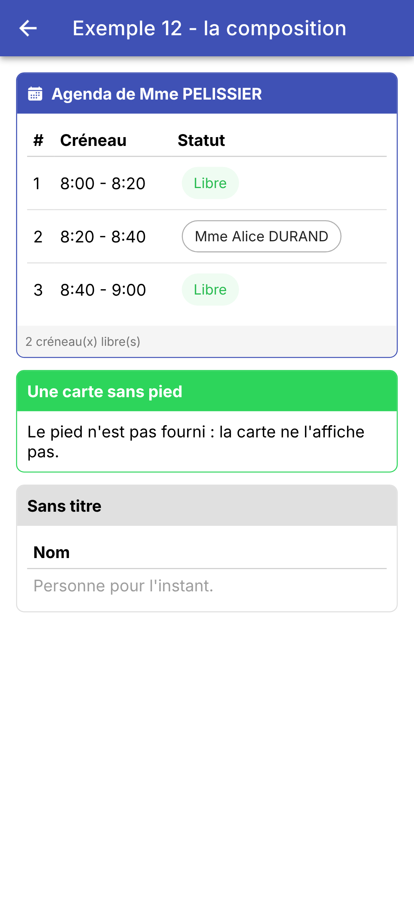
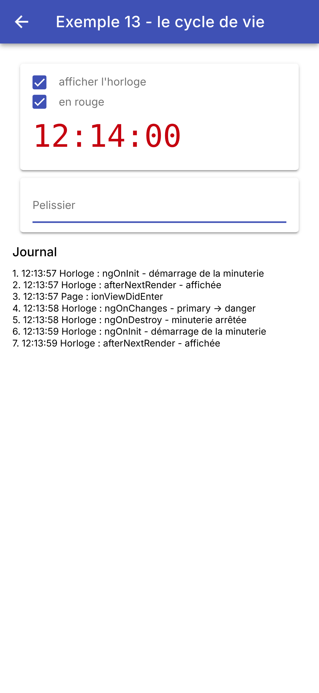
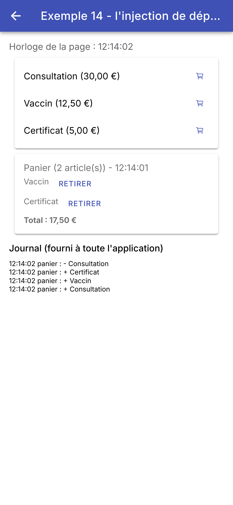

4. Les composants
Écrire ses propres composants, c'est le cœur du travail avec [Angular] et [Ionic] : un écran bien écrit est fait de petits composants, chacun avec ses entrées, son gabarit, son style et, s'il le faut, son état. Ce chapitre montre comment ils se parlent (entrées et sorties), comment ils s'assemblent (projection de contenu, modèles), comment ils vivent (cycle de vie), comment ils partagent des données sans les passer de main en main (injection de dépendances), et comment on réutilise un comportement (directives). C'est le pendant du chapitre « Les widgets » du cours [Flutter] : mêmes exemples, mêmes écrans, mais avec les outils d'[Angular].
4.1. Exemple 10 : les composants et leurs entrées
4.1.1. Le type des données
Le parent et l'enfant partagent un type, rangé dans son propre fichier :
| // =========================================================================
// src/app/ex10-composants-entrees/medecin.ts - le type des données
// -------------------------------------------------------------------------
// Le type partagé par le parent (Ex10Page) et l'enfant (CarteMedecin).
// Une interface TypeScript ne produit aucun code : elle sert seulement au
// compilateur, qui vérifie que chaque objet a bien tous ses champs.
// readonly : on ne modifie jamais un médecin ; on en fabrique un autre.
// =========================================================================
export interface Medecin {
readonly id: number;
readonly titre: string;
readonly prenom: string;
readonly nom: string;
readonly specialite: string;
readonly disponible: boolean;
}
// une copie où seule la disponibilité change : ...m recopie tous les champs
// de m, puis disponible les remplace
export function avecDisponibilite(m: Medecin, disponible: boolean): Medecin {
return { ...m, disponible };
}
|
- lignes 10-17 : une interface [TypeScript] : la forme d'un médecin. Elle ne produit aucun code à l'exécution ; elle sert seulement au compilateur, qui vérifie que chaque objet a bien tous ses champs, du bon type. [readonly] interdit de modifier un champ après la création de l'objet ;
- lignes 21-23 : une copie où seule la disponibilité change. [{ ...m, disponible }] recopie tous les champs de [m] (l'opérateur de décomposition [...]), puis le champ [disponible] remplace celui de [m] : l'objet d'origine ne change jamais.
Là où [Dart] écrit une classe, avec un constructeur à paramètres nommés, [TypeScript] se contente d'une interface et de littéraux objets : [{ id: 1, titre: 'Mme', ... }] a déjà des « paramètres nommés ».
4.1.2. L'enfant
Le composant [CarteMedecin] affiche un médecin dans une carte d'[Ionic]. Comme toute la suite du cours, il est écrit en deux fichiers : la classe ([carte-medecin.ts]) et son gabarit ([carte-medecin.html]).
| // =========================================================================
// src/app/ex10-composants-entrees/carte-medecin.ts - un composant ENFANT
// -------------------------------------------------------------------------
// Il reçoit ses données de son parent par ses ENTRÉES (inputs), déclarées
// par les fonctions input() et input.required(). Leur type est vérifié à
// la compilation (strictTemplates) : [medecin]="42" serait refusé.
// - input.required<T>() : le parent DOIT fournir cette entrée ;
// - input(false) : une entrée facultative, avec sa valeur par défaut ;
// - transform : une fonction qui convertit la valeur reçue
// (booleanAttribute, numberAttribute : celles d'Angular, pour écrire
// compact ou rang="1" comme de simples attributs HTML).
// Une entrée est un SIGNAL en lecture seule : on la lit en l'appelant,
// medecin(), et l'écran suit ses changements.
//
// Règle d'or : un composant ne MODIFIE JAMAIS ses entrées (le compilateur
// l'interdit d'ailleurs : un input() n'a ni set ni update). Les données
// descendent du parent vers l'enfant ; pour demander un changement,
// l'enfant prévient son parent par une sortie (cf. exemple 11).
// =========================================================================
import { booleanAttribute, Component, computed, input, numberAttribute } from '@angular/core';
import { IonAvatar, IonCard, IonCardContent, IonLabel, IonText } from '@ionic/angular';
import { Medecin } from './medecin';
@Component({
selector: 'app-carte-medecin',
imports: [IonCard, IonCardContent, IonAvatar, IonLabel, IonText],
templateUrl: './carte-medecin.html',
// le "style" de la carte : il ne s'applique QU'AU gabarit de ce composant.
// Angular ajoute aux balises du gabarit un attribut qui lui est propre, et
// réécrit les sélecteurs en conséquence : aucun autre composant ne peut
// être gêné par ces règles (encapsulation des styles)
styles: `
ion-card { margin: 6px 0; border: 2px solid transparent; border-radius: 12px; }
ion-card.disponible { border-color: #4caf50; }
ion-card-content { display: flex; align-items: center; gap: 12px; padding: 12px; }
ion-avatar {
width: 40px; height: 40px; display: flex; align-items: center; justify-content: center;
background: #087ea4; color: white; font-weight: bold;
}
h2 { margin: 0; font-size: 17px; color: var(--ion-text-color); }
`,
})
export class CarteMedecin {
// les entrées : un médecin et un rang obligatoires, un affichage compact facultatif
readonly medecin = input.required<Medecin>();
// numberAttribute : rang="1" (une chaîne) devient le nombre 1
readonly rang = input.required({ transform: numberAttribute });
// booleanAttribute : l'attribut seul (<app-carte-medecin compact />) vaut true
readonly compact = input(false, { transform: booleanAttribute });
// une valeur calculée à partir des entrées : elle suit leurs changements
readonly initiales = computed(() => this.medecin().prenom[0] + this.medecin().nom[0]);
}
|
- ligne 26 : le sélecteur : le nom de la balise du composant. Le parent écrira [<app-carte-medecin ... />] ;
- ligne 27 : les composants d'[Ionic] qu'utilise le gabarit. Un composant ne connaît que ce qu'il importe ;
- lignes 33-42 : le « style » de la carte. Ces règles ne s'appliquent QU'AU gabarit de ce composant : [Angular] ajoute aux balises du gabarit un attribut qui lui est propre et réécrit les sélecteurs en conséquence (l'encapsulation des styles). La règle [ion-card { ... }] ne touche donc aucune autre carte de l'application. C'est l'équivalent des constantes privées de style du widget [Flutter], ou des « modules CSS » de [React] : le style d'un composant est rangé avec lui, et ne gêne personne ;
- ligne 35 : une bordure verte pour la classe [disponible], que le gabarit pose sur la carte d'un médecin disponible ;
- lignes 37-40 : le disque des initiales, d'un bleu propre à la carte ;
- ligne 46 : une première entrée (input), obligatoire : [input.required<Medecin>()]. Le parent DOIT la fournir, sinon le compilateur refuse son gabarit ; et il doit fournir un [Medecin] : [[medecin]="42"] serait refusé lui aussi (option [strictTemplates] du projet) ;
- ligne 48 : une deuxième entrée obligatoire, le rang, avec une transformation : [numberAttribute], une fonction d'[Angular] qui convertit la valeur reçue en nombre. Le parent peut alors écrire [rang="1"] (une chaîne, comme tout attribut HTML) aussi bien que [[rang]="i + 1"] (un nombre) ;
- ligne 50 : une entrée facultative, avec sa valeur par défaut ([false]) et une autre transformation : [booleanAttribute]. L'attribut seul, [<app-carte-medecin compact />], vaut alors [true], comme l'attribut [disabled] d'un bouton HTML ;
- ligne 53 : une valeur calculée à partir des entrées. Une entrée est un SIGNAL en lecture seule : on la lit en l'appelant ([this.medecin()]), et [computed] recalcule les initiales chaque fois que le parent donne un autre médecin.
| <!-- ======================================================================
carte-medecin.html - le gabarit du composant CarteMedecin
Il ne lit que les entrées du composant : medecin(), rang(), compact().
====================================================================== -->
<!-- [class.disponible] : la classe CSS disponible (une bordure verte)
n'est posée que si le médecin est disponible -->
<ion-card [class.disponible]="medecin().disponible">
<ion-card-content>
<!-- un disque coloré, avec les initiales -->
<ion-avatar>{{ initiales() }}</ion-avatar>
<ion-label>
<h2>{{ rang() }}. {{ medecin().titre }} {{ medecin().prenom }} {{ medecin().nom }}</h2>
<!-- la spécialité n'existe qu'en affichage non compact -->
@if (!compact()) {
<ion-text color="medium">{{ medecin().specialite }}</ion-text>
}
</ion-label>
</ion-card-content>
</ion-card>
|
- ligne 8 : [[class.disponible]="..."] pose la classe CSS [disponible] sur la carte quand l'expression est vraie, et la retire sinon ;
- ligne 11 : un [ion-avatar] (un disque), avec les initiales ;
- ligne 13 : le rang et le nom du médecin, lus dans les entrées ;
- lignes 15-17 : la spécialité n'existe qu'en affichage non compact.
Règle d'or : un composant ne modifie jamais ses entrées. Le compilateur l'interdit d'ailleurs : un signal créé par [input()] n'a ni [set] ni [update]. Les données descendent du parent vers l'enfant ; pour demander un changement, l'enfant prévient son parent par une sortie (exemple 11). Quand le parent change ses données, [Angular] donne aux entrées de ses enfants leurs nouvelles valeurs, et l'écran suit.
4.1.3. Le parent
| // =========================================================================
// src/app/ex10-composants-entrees/ex10.page.ts - le composant PARENT
// -------------------------------------------------------------------------
// Il importe le composant CarteMedecin et l'utilise, autant de fois qu'il
// le faut, comme n'importe quel composant d'Ionic : un composant est un
// morceau d'interface RÉUTILISABLE, avec ses propres entrées, son gabarit
// et son style. Écrire ses propres composants, c'est le cœur du travail
// avec Angular : un écran bien écrit est fait de petits composants.
// =========================================================================
import { Component, signal } from '@angular/core';
import {
IonBackButton, IonButton, IonButtons, IonContent, IonHeader, IonText, IonTitle, IonToggle, IonToolbar,
} from '@ionic/angular';
import { CarteMedecin } from './carte-medecin';
import { avecDisponibilite, Medecin } from './medecin';
@Component({
selector: 'app-ex10',
// on importe CarteMedecin comme on importe les composants d'Ionic
imports: [
IonHeader, IonToolbar, IonButtons, IonBackButton, IonTitle, IonContent, IonToggle, IonButton, IonText,
CarteMedecin,
],
templateUrl: './ex10.page.html',
})
export class Ex10Page {
// l'état du parent : la liste des médecins (qu'on remplacera par une
// autre, jamais modifiée sur place) et l'affichage compact
readonly medecins = signal<Medecin[]>([
{ id: 1, titre: 'Mme', prenom: 'Marie', nom: 'PELISSIER', specialite: 'généraliste', disponible: true },
{ id: 2, titre: 'Mr', prenom: 'Paul', nom: 'TATOU', specialite: 'pédiatre', disponible: false },
{ id: 3, titre: 'Melle', prenom: 'Sophie', nom: 'DUPONT', specialite: 'généraliste', disponible: true },
]);
readonly compact = signal(false);
// le parent change SES données : une nouvelle liste, faite de copies.
// Angular met à jour les entrées des cartes, qui suivent
inverserDisponibilite(): void {
this.medecins.update((liste) => liste.map((m) => avecDisponibilite(m, !m.disponible)));
}
}
|
- ligne 15 : le parent importe le composant [CarteMedecin]...
- lignes 21-24 : ... et le déclare dans ses [imports], exactement comme les composants d'[Ionic] : un composant maison s'utilise comme un composant du framework ;
- lignes 30-35 : l'état du parent : la liste des médecins (un signal, dont la valeur sera remplacée par une autre liste, jamais modifiée sur place) et l'affichage compact ;
- lignes 39-41 : le parent change SES données : une nouvelle liste, faite de copies des médecins. [Angular] donne aux cartes leurs nouvelles entrées, et elles se mettent à jour.
| <!-- ======================================================================
ex10.page.html - le gabarit du parent : il utilise <app-carte-medecin>
====================================================================== -->
<ion-header>
<ion-toolbar color="primary">
<ion-buttons slot="start">
<ion-back-button defaultHref="/" />
</ion-buttons>
<ion-title>Exemple 10 - les composants et leurs entrées</ion-title>
</ion-toolbar>
</ion-header>
<ion-content class="ion-padding">
<!-- justify="space-between" : le libellé à gauche, l'interrupteur à droite -->
<ion-toggle justify="space-between" [checked]="compact()" (ionChange)="compact.set($event.detail.checked)">
affichage compact
</ion-toggle>
<ion-button fill="outline" (click)="inverserDisponibilite()">Inverser les disponibilités</ion-button>
<!-- une carte par médecin ; chaque carte reçoit SES entrées par [entree]="expression" -->
@for (m of medecins(); track m.id; let i = $index) {
<app-carte-medecin [medecin]="m" [rang]="i + 1" [compact]="compact()" />
}
<p><ion-text color="medium">La même carte, en version compacte, en fixant l'entrée :</ion-text></p>
<!-- rang="1" et compact : de simples attributs, convertis par les transformations
numberAttribute et booleanAttribute -->
<div style="width: 260px">
<app-carte-medecin [medecin]="medecins()[0]" rang="1" compact />
</div>
</ion-content>
|
- lignes 16-18 : un interrupteur d'[Ionic] ([ion-toggle]), le pendant du [SwitchListTile] de [Flutter]. [justify="space-between"] place le libellé à gauche et l'interrupteur à droite ; [(ionChange)] est l'événement émis à chaque changement, et [$event.detail.checked] son nouvel état ;
- ligne 20 : un bouton à bordure ([fill="outline"]), le pendant de l'[OutlinedButton] ;
- lignes 23-25 : une carte par médecin. [track m.id] dit à [Angular] comment reconnaître un médecin d'une liste à l'autre (le pendant de la clé [ValueKey(m.id)] de [Flutter]) ; [let i = $index] donne le rang de l'élément. Chaque carte reçoit SES entrées, par la syntaxe [[entree]="expression"] : l'expression est évaluée dans le parent, et sa valeur est donnée à l'entrée de l'enfant ;
- ligne 31 : la même carte, en version compacte, dans une boîte de 260 pixels de large. [rang="1"] et [compact] sont écrits comme de simples attributs HTML : les transformations [numberAttribute] et [booleanAttribute] de l'enfant les convertissent en [1] et [true].
Au départ, puis en affichage compact, disponibilités inversées :
Une méthode qui fabrique un morceau de gabarit, ou un vrai composant ? [Angular] ne laisse guère le choix : un morceau d'interface réutilisable est un composant. C'est une bonne chose : il a un nom, ses entrées sont typées et vérifiées à la compilation, son style est encapsulé, et il est réutilisable ailleurs. Là où [Flutter] passe les données par les paramètres du constructeur d'un widget, [Angular] les passe par des entrées, qui sont des signaux : l'enfant n'a rien à faire pour suivre leurs changements.
4.2. Exemple 11 : l'enfant prévient son parent
Les données descendent par les entrées ; les informations remontent par les sorties (outputs) : des événements, que l'enfant émet et que le parent écoute, comme il écoute l'événement [(click)] d'un bouton.
4.2.1. Des « événements » de l'enfant
| // =========================================================================
// src/app/ex11-remonter-l-information/compteur.ts
// -------------------------------------------------------------------------
// Un enfant qui PRÉVIENT son parent : il déclare des SORTIES (outputs),
// avec la fonction output(), et les "émet" quand il se passe quelque chose.
// Le parent s'y abonne dans son gabarit, comme à l'événement (click) d'un
// bouton :
// <app-compteur libelle="Cafés" [max]="3" (incremente)="..." (limite)="..." />
// - output<number>() : un événement qui transporte un nombre ($event) ;
// - output<void>() : un événement sans donnée.
// =========================================================================
import { Component, input, output, signal } from '@angular/core';
import { IonButton, IonChip } from '@ionic/angular';
@Component({
selector: 'app-compteur',
imports: [IonButton, IonChip],
templateUrl: './compteur.html',
styles: `
:host { display: flex; align-items: center; }
.libelle { width: 110px; }
`,
})
export class Compteur {
// les entrées (ce qui descend)...
readonly libelle = input.required<string>();
readonly max = input.required<number>();
// ... et les sorties (ce qui remonte)
readonly incremente = output<number>(); // avec la nouvelle valeur
readonly limite = output<void>(); // sans donnée
// l'état PROPRE à ce compteur : chaque Compteur a le sien
readonly valeur = signal(0);
plus(): void {
if (this.valeur() >= this.max()) {
// emit() : prévient tous ceux qui écoutent la sortie
this.limite.emit();
return;
}
this.valeur.update((v) => v + 1);
// on PRÉVIENT le parent, en lui transmettant la nouvelle valeur
this.incremente.emit(this.valeur());
}
}
|
- lignes 20-23 : le style du composant. [:host] désigne la balise du composant elle-même ([<app-compteur>]), dont les enfants sont alignés sur une ligne ([display: flex]) ;
- lignes 27-28 : les entrées : ce qui descend du parent ;
- lignes 30-31 : les sorties : ce qui remonte vers le parent. [output<number>()] déclare un événement qui transporte un nombre ; [output<void>()] un événement sans donnée. Ce sont les pendants des paramètres [onIncremente] (un [ValueChanged<int>]) et [onLimite] (un [VoidCallback]) du compteur [Flutter] : au lieu de recevoir des fonctions du parent, l'enfant émet des événements, auxquels le parent s'abonne ;
- ligne 34 : l'état PROPRE à ce compteur : chaque [Compteur] a le sien ;
- lignes 36-45 : au-delà du maximum, le compteur prévient son parent ([this.limite.emit()]) ; sinon, il change son état, puis prévient son parent en lui transmettant la nouvelle valeur ([this.incremente.emit(...)]). Le signal a déjà sa nouvelle valeur quand on la lit à la ligne 44.
| <!-- ======================================================================
compteur.html - un libellé, un bouton +1 et la valeur du compteur
====================================================================== -->
<span class="libelle">{{ libelle() }}</span>
<ion-button fill="outline" (click)="plus()">+1</ion-button>
<ion-chip [outline]="true">{{ valeur() }} / {{ max() }}</ion-chip>
|
- lignes 4-6 : un libellé, un bouton [+1] et une puce ([ion-chip]) qui affiche la valeur et le maximum.
4.2.2. Un composant contrôlé
Un champ de formulaire « maison » (libellé + champ + aide + compteur de caractères) qui s'utilise comme un champ contrôlé : la valeur appartient au parent, qui la lui passe et qui est prévenu de chaque frappe. [Angular] a pour cela une fonction toute prête, [model()].
| // =========================================================================
// src/app/ex11-remonter-l-information/champ-texte.ts - un composant CONTRÔLÉ
// -------------------------------------------------------------------------
// Un champ de formulaire "maison" (libellé + champ + aide + compteur de
// caractères) qui s'utilise comme un champ contrôlé, avec une liaison
// BIDIRECTIONNELLE :
// <app-champ-texte [(valeur)]="prenom" libelle="Prénom" [max]="20" />
// La valeur appartient au PARENT (son signal prenom). model() déclare à la
// fois une entrée (valeur) et une sortie (valeurChange) :
// - le parent passe sa valeur au champ : [valeur]="prenom()" ;
// - le champ change la valeur : valeur.set(...), qui émet valeurChange ;
// - la syntaxe [(valeur)]="prenom" (la "banane dans une boîte") écrit les
// deux à la fois : le signal du parent suit la saisie.
// Quand le parent change lui-même la valeur (bouton Vider), le champ suit,
// sans rien à écrire de plus : une entrée est un signal.
//
// Le message d'erreur (errorText) : Ionic ne l'affiche que si le champ porte
// les classes ion-invalid et ion-touched, qu'il recopie lui-même de l'état
// du contrôle de formulaire d'Angular (ngModel, cf. exemples 07 et 08).
// On passe donc par ngModel, et l'on fixe l'erreur de son contrôle.
// =========================================================================
import { Component, computed, effect, input, model, viewChild } from '@angular/core';
import { FormsModule, NgModel } from '@angular/forms';
import { IonInput } from '@ionic/angular';
@Component({
selector: 'app-champ-texte',
imports: [IonInput, FormsModule],
templateUrl: './champ-texte.html',
})
export class ChampTexte {
// model.required : une entrée obligatoire... que le composant peut modifier
readonly valeur = model.required<string>();
readonly libelle = input.required<string>();
readonly max = input.required<number>();
readonly aide = input('');
// le champ est-il plein ?
readonly plein = computed(() => this.valeur().length === this.max());
// le ngModel du gabarit, et le contrôle de formulaire qu'il gère
private readonly modele = viewChild.required(NgModel);
constructor() {
// un effet : il est réexécuté chaque fois que plein() change. Il déclare
// le contrôle "touché" et "en erreur" quand le champ est plein
effect(() => {
const controle = this.modele().control;
controle.markAsTouched();
controle.setErrors(this.plein() ? { plein: true } : null);
});
}
}
|
- ligne 34 : [model.required<string>()] déclare à la fois une entrée ([valeur]) et une sortie ([valeurChange]). C'est un signal que le composant peut, lui, modifier : [this.valeur.set('...')] change sa valeur ET émet [valeurChange], qui prévient le parent. Le parent écrira [[(valeur)]="prenom"] (la « banane dans une boîte ») : son signal [prenom] est donné au champ, et il suit la saisie ;
- lignes 35-37 : les autres entrées : le libellé, la longueur maximale, et un texte d'aide facultatif (vide par défaut) ;
- ligne 40 : le champ est-il plein ? Une valeur calculée à partir de la valeur et du maximum ;
- ligne 43 : [viewChild.required(NgModel)] : la directive [ngModel] du gabarit (le contrôle de formulaire d'[Angular], vu aux exemples 07 et 08), sous la forme d'un signal ;
- lignes 48-52 : un EFFET : une fonction réexécutée chaque fois qu'un signal qu'elle lit change (ici [plein()]). Elle marque le contrôle comme « touché » et lui donne une erreur quand le champ est plein. Pourquoi passer par le contrôle de formulaire ? Parce qu'[Ionic] n'affiche le message d'erreur d'un [ion-input] ([errorText]) que si le champ porte les classes CSS [ion-invalid] et [ion-touched], et qu'avec [Angular] il fabrique lui-même ces classes à partir de l'état du contrôle de formulaire (ses classes [ng-invalid] et [ng-touched]). Les poser à la main ne servirait à rien : [Ionic] les retirerait à la frappe suivante.
| <!-- ======================================================================
champ-texte.html - un ion-input, piloté par la valeur du parent
====================================================================== -->
<!-- [(ngModel)]="valeur" : la liaison bidirectionnelle entre le champ et le
signal valeur (le model() du composant) : chaque frappe fait valeur.set(...),
qui émet valeurChange vers le parent ; une nouvelle valeur du parent
s'affiche dans le champ.
[maxlength] : le champ refuse les caractères de trop ;
[counter] : il affiche un compteur (« 5 / 20 ») ;
errorText remplace helperText (et le champ rougit) quand le contrôle est en erreur -->
<ion-input
[(ngModel)]="valeur"
[label]="libelle()"
labelPlacement="floating"
[maxlength]="max()"
[counter]="true"
[helperText]="aide()"
errorText="Longueur maximale atteinte"
/>
|
- ligne 13 : [[(ngModel)]="valeur"] : la liaison bidirectionnelle entre le champ et le signal [valeur]. [ngModel] accepte un signal modifiable : chaque frappe fait [valeur.set(...)], qui prévient le parent ; une nouvelle valeur du parent s'affiche dans le champ ;
- lignes 14-15 : le libellé, qui « flotte » au-dessus du champ quand celui-ci a une valeur ou le focus ;
- ligne 16 : le champ refuse les caractères de trop ;
- ligne 17 : il affiche un compteur (« 5 / 20 ») ;
- ligne 18 : un texte d'aide, sous le champ ;
- ligne 19 : le message qui remplace le texte d'aide, et fait rougir le champ, quand le contrôle est en erreur (le champ est plein).
Le champ [Flutter] avait une difficulté propre : un [TextField] garde son texte dans un contrôleur, qu'il fallait tenir à jour dans [didUpdateWidget] quand le parent changeait la valeur lui-même (bouton « Vider »). Rien de tel ici : la valeur du parent arrive dans un signal, et [ngModel] la recopie dans le champ dès qu'elle change.
4.2.3. Le parent
| // =========================================================================
// src/app/ex11-remonter-l-information/ex11.page.ts - le parent écoute ses enfants
// -------------------------------------------------------------------------
// Les données descendent (entrées) ; les informations remontent par les
// SORTIES des enfants :
// 1. des "événements" de l'enfant : (incremente), (limite) ;
// 2. un composant contrôlé : [(valeur)], comme le [(ngModel)] d'un champ.
// L'état reste la propriété du parent, qui peut le modifier lui-même (Vider).
// =========================================================================
import { Component, signal } from '@angular/core';
import {
IonBackButton, IonButton, IonButtons, IonCard, IonCardContent, IonCardHeader, IonCardSubtitle, IonContent,
IonHeader, IonTitle, IonToolbar,
} from '@ionic/angular';
import { ChampTexte } from './champ-texte';
import { Compteur } from './compteur';
@Component({
selector: 'app-ex11',
imports: [
IonHeader, IonToolbar, IonButtons, IonBackButton, IonTitle, IonContent, IonCard, IonCardHeader,
IonCardSubtitle, IonCardContent, IonButton, Compteur, ChampTexte,
],
templateUrl: './ex11.page.html',
})
export class Ex11Page {
readonly total = signal(0);
readonly message = signal('');
readonly prenom = signal('Marie');
readonly nom = signal('PELISSIER');
// la méthode appelée par un compteur : elle reçoit la valeur qu'il transmet
surIncremente(libelle: string, valeur: number): void {
this.total.update((t) => t + 1);
this.message.set(`${libelle} vaut maintenant ${valeur}`);
}
// le parent change ses données : les champs suivent
vider(): void {
this.prenom.set('');
this.nom.set('');
}
}
|
- lignes 30-31 : la valeur des deux champs appartient au parent : deux signaux ;
- lignes 34-37 : la méthode appelée quand un compteur émet [incremente] : elle reçoit la valeur qu'il transmet ;
- lignes 40-43 : le parent change la valeur lui-même : les champs se vident.
| <!-- ======================================================================
ex11.page.html - le gabarit du parent : il écoute les sorties des enfants
====================================================================== -->
<ion-header>
<ion-toolbar color="primary">
<ion-buttons slot="start">
<ion-back-button defaultHref="/" />
</ion-buttons>
<ion-title>Exemple 11 - l'enfant prévient son parent</ion-title>
</ion-toolbar>
</ion-header>
<ion-content class="ion-padding">
<ion-card>
<ion-card-header>
<ion-card-subtitle>1. Des sorties écoutées par le parent</ion-card-subtitle>
</ion-card-header>
<ion-card-content>
<!-- (sortie)="instruction" : $event est la donnée émise par l'enfant -->
<app-compteur
libelle="Cafés"
[max]="3"
(incremente)="surIncremente('Cafés', $event)"
(limite)="message.set('Pas plus de 3 cafés !')"
/>
<app-compteur
libelle="Verres d'eau"
[max]="8"
(incremente)="surIncremente('Verres d\'eau', $event)"
(limite)="message.set('Assez bu.')"
/>
<p><em>Total des clics : {{ total() }} - {{ message() }}</em></p>
</ion-card-content>
</ion-card>
<ion-card>
<ion-card-header>
<ion-card-subtitle>2. Des composants contrôlés</ion-card-subtitle>
</ion-card-header>
<ion-card-content>
<!-- [(valeur)]="prenom" : la liaison bidirectionnelle avec un signal du parent -->
<app-champ-texte [(valeur)]="prenom" libelle="Prénom" [max]="20" aide="Obligatoire" />
<app-champ-texte [(valeur)]="nom" libelle="Nom" [max]="20" aide="Mis en majuscules à l'affichage" />
<!-- les données du parent, qui suivent la saisie -->
<p>Données du parent : <strong>{{ prenom() }} {{ nom().toUpperCase() }}</strong></p>
<ion-button fill="outline" (click)="vider()">Vider (depuis le parent)</ion-button>
</ion-card-content>
</ion-card>
</ion-content>
|
- lignes 21-26 : un compteur, ses entrées et ses sorties. [(incremente)="surIncremente('Cafés', $event)"] : à chaque émission, [Angular] exécute l'instruction, où [$event] est la donnée émise par l'enfant ; le parent y ajoute son propre argument (le libellé). [(limite)] exécute directement une instruction : [message.set(...)] ;
- ligne 30 : [\'] : une apostrophe dans une chaîne délimitée par des apostrophes, elle-même dans un attribut délimité par des guillemets ;
- lignes 43-44 : deux champs contrôlés, liés aux signaux [prenom] et [nom] du parent par [[(valeur)]]. Le parent passe le signal lui-même ([prenom], sans parenthèses) : [Angular] le lit et le modifie ;
- ligne 46 : les données du parent, qui suivent la saisie ;
- ligne 47 : le parent change la valeur lui-même : les champs se vident.
On appuie quatre fois sur le premier compteur (la quatrième fois, il émet [limite]), une fois sur le second, et l'on remplit le nom ; puis on vide les champs depuis le parent :
Entrées et sorties, c'est tout le dialogue entre un parent et ses enfants dans [Angular]. Le [Flutter] passait des fonctions en paramètres ([onIncremente: (v) => ...]), comme [React] passe des fonctions en « props » ; [Angular] préfère des événements, qui s'écoutent avec la même syntaxe que ceux du navigateur ([(click)], [(incremente)]). Et la liaison bidirectionnelle [[( )]], que [Flutter] et [React] écrivent à la main (une valeur + une fonction [onChanged]), est ici une syntaxe du gabarit.
4.3. Exemple 12 : la composition
4.3.1. Une carte
Les entrées d'un composant transmettent des données... Le contenu, lui, s'écrit entre ses balises, comme pour une balise HTML : [<app-carte>...ici...</app-carte>]. Le composant le place où il veut dans son gabarit, avec la balise [<ng-content>] : c'est la projection de contenu. [Ionic] l'utilise partout : le texte d'un [ion-button], le contenu d'un [ion-card] ou d'un [ion-item] sont projetés. C'est le pendant des paramètres [child], [title] ou [body] des widgets [Flutter], qui reçoivent d'autres widgets.
| // =========================================================================
// src/app/ex12-composition/carte.ts - un GABARIT réutilisable
// -------------------------------------------------------------------------
// Les entrées d'un composant transmettent des DONNÉES... Le CONTENU, lui,
// s'écrit entre ses balises, comme pour une balise HTML, et le composant
// le place où il veut, avec la balise <ng-content> : c'est la PROJECTION
// de contenu. Ionic l'utilise partout : le contenu d'un <ion-button>,
// d'un <ion-card>, d'un <ion-item>...
// - <ng-content /> : le contenu "principal" (tout ce qui n'est pas ailleurs) ;
// - <ng-content select="[entete]"> : un autre emplacement (un "slot"),
// pour les balises du parent qui portent l'attribut entete ; ce qu'on
// écrit entre <ng-content> et </ng-content> est le contenu par défaut ;
// - le pied est facultatif : la carte le cherche dans son contenu
// (contentChild) et ne l'affiche que s'il est là.
// La carte fixe le cadre (bordure, en-tête, pied), le parent fournit ce
// qu'il y a dedans.
// =========================================================================
import { Component, computed, contentChild, Directive, input } from '@angular/core';
// un MARQUEUR : une directive sans code, posée par le parent sur son pied
// (<span pied>...</span>), pour que la carte puisse le retrouver
@Directive({ selector: '[pied]' })
export class PiedDeCarte {}
@Component({
selector: 'app-carte',
templateUrl: './carte.html',
styles: `
:host { display: block; margin: 0 0 12px; border: 1px solid var(--fond); border-radius: 8px; overflow: hidden; }
.entete { background: var(--fond); padding: 10px; font-weight: bold; }
.entete.coloree { color: white; }
.corps { padding: 10px; }
.pied { background: #f5f5f5; padding: 8px; color: #757575; font-size: 12px; }
`,
// host : des liaisons sur la balise <app-carte> elle-même. Ici, une
// variable CSS (--fond), lue par les règles ci-dessus
host: { '[style.--fond]': 'fond()' },
})
export class Carte {
// une couleur d'Ionic, facultative ('primary', 'success'...) : undefined par défaut
readonly couleur = input<string>();
readonly fond = computed(() => (this.couleur() ? `var(--ion-color-${this.couleur()})` : '#e0e0e0'));
// contentChild : le premier élément du CONTENU qui porte la directive
// PiedDeCarte ; un signal, undefined s'il n'y en a pas
readonly pied = contentChild(PiedDeCarte);
}
|
- lignes 23-24 : un MARQUEUR : une directive (une classe sans gabarit, cf. exemple 15), qui ne fait rien. Le parent la pose sur son pied, [<span pied>...</span>], pour que la carte puisse le retrouver dans son contenu ;
- lignes 29-35 : le style de la carte. Les couleurs viennent d'une variable CSS, [--fond] ;
- ligne 38 : [host] : des liaisons sur la balise du composant elle-même ([<app-carte>]). Ici, la variable CSS [--fond] reçoit la valeur calculée [fond()] ;
- ligne 42 : une entrée facultative, sans valeur par défaut : [undefined] si le parent ne la donne pas. Comme les composants d'[Ionic], la carte reçoit le nom d'une couleur du thème ([primary], [success]...) ;
- ligne 43 : la couleur du fond : la variable CSS d'[Ionic] qui correspond à cette couleur ([var(--ion-color-primary)]...), ou un gris clair ;
- ligne 47 : [contentChild(PiedDeCarte)] cherche, dans le CONTENU fourni par le parent, le premier élément qui porte la directive [PiedDeCarte]. C'est un signal : [undefined] s'il n'y en a pas.
| <!-- ======================================================================
carte.html - le cadre de la carte, et trois emplacements pour le contenu
====================================================================== -->
<!-- l'en-tête : les styles de .entete (gras, blanc sur une couleur)
s'appliquent, par héritage, à TOUS les textes fournis par le parent -->
<div class="entete" [class.coloree]="couleur()">
<ng-content select="[entete]">Sans titre</ng-content>
</div>
<!-- le contenu principal, fourni par le parent -->
<div class="corps">
<ng-content />
</div>
<!-- pas de pied fourni : pas de pied du tout -->
@if (pied()) {
<div class="pied">
<ng-content select="[pied]" />
</div>
}
|
- lignes 7-9 : l'en-tête. [<ng-content select="[entete]">] est un emplacement (un « slot ») : il reçoit les balises du contenu qui correspondent au sélecteur CSS [[entete]], c'est-à-dire qui portent l'attribut [entete]. Ce qui est écrit entre [<ng-content>] et [</ng-content>] (« Sans titre ») est le contenu par défaut, affiché quand le parent ne fournit pas d'en-tête. Les styles de [.entete] (le gras, le blanc sur une couleur) s'appliquent, par héritage, à tous les textes fournis par le parent : c'est le pendant du [DefaultTextStyle] de [Flutter] ;
- lignes 12-14 : le contenu principal : [<ng-content />], sans sélecteur, reçoit tout ce qui n'est allé dans aucun autre emplacement ;
- lignes 17-21 : pas de pied fourni : pas de pied du tout (ni sa marge, ni son fond gris).
4.3.2. Un tableau générique
| // =========================================================================
// src/app/ex12-composition/tableau.ts - un tableau GÉNÉRIQUE
// -------------------------------------------------------------------------
// Tableau<T> est un composant générique : il affiche des lignes de
// n'importe quel type T. Il sait parcourir les lignes, mais pas comment
// afficher UNE cellule : c'est le parent qui le lui dit, en lui passant,
// dans son contenu, un MODÈLE (<ng-template>) par colonne :
// <app-tableau [lignes]="creneaux">
// <ng-template colonne="Créneau" let-c>{{ c.horaire }}</ng-template>
// </app-tableau>
// Un <ng-template> n'est pas affiché là où il est écrit : c'est un morceau
// de gabarit "en attente", que le tableau affiche lui-même, autant de fois
// qu'il le faut (ngTemplateOutlet), en lui donnant ses données (la ligne,
// son rang) : let-c reçoit la ligne, let-i="index" son rang.
// Le contenu est fourni par le parent, mais il utilise des données qui
// appartiennent à l'enfant : c'est le pendant des "builders" de Flutter
// (ListView.builder) et des "render props" de React.
// =========================================================================
import { NgTemplateOutlet } from '@angular/common';
import { Component, contentChildren, Directive, inject, input, TemplateRef } from '@angular/core';
// les données qu'un modèle de cellule reçoit : $implicit est la valeur de
// let-c (sans nom), index celle de let-i="index"
export interface ContexteCellule<T> {
$implicit: T;
index: number;
}
// une COLONNE : une directive posée sur un <ng-template>. Elle porte le titre
// de la colonne, et donne accès au modèle (TemplateRef) sur lequel elle est posée
@Directive({ selector: 'ng-template[colonne]' })
export class Colonne {
readonly titre = input.required<string>({ alias: 'colonne' });
readonly modele = inject<TemplateRef<ContexteCellule<unknown>>>(TemplateRef);
}
@Component({
selector: 'app-tableau',
imports: [NgTemplateOutlet],
templateUrl: './tableau.html',
styles: `
table { width: 100%; border-collapse: collapse; }
th { text-align: left; padding: 6px; border-bottom: 1px solid #ccc; }
td { padding: 6px; border-top: 1px solid #e0e0e0; }
tbody tr:first-child td { border-top: none; }
.vide { color: #9e9e9e; padding: 6px; }
`,
})
export class Tableau<T> {
// T est déduit du type de [lignes] : Tableau<Creneau>...
readonly lignes = input.required<readonly T[]>();
// contentChildren : TOUTES les colonnes du contenu, dans l'ordre (un signal)
readonly colonnes = contentChildren(Colonne);
}
|
- lignes 25-28 : les données qu'un modèle de cellule reçoit du tableau : la ligne ([$implicit], la valeur par défaut) et son rang ([index]) ;
- lignes 32-36 : une COLONNE : une directive qui ne se pose que sur un [<ng-template>] (son sélecteur, [ng-template[colonne]]). Un [<ng-template>] n'est pas affiché là où il est écrit : c'est un morceau de gabarit « en attente », un MODÈLE, que quelqu'un d'autre affichera, autant de fois qu'il le faudra. La directive porte le titre de la colonne (l'entrée [titre], qui prend le nom de la directive grâce à l'alias : [colonne="Créneau"]), et donne accès au modèle sur lequel elle est posée ([inject(TemplateRef)]) ;
- ligne 50 : [Tableau<T>] est un composant générique : il affiche des lignes de n'importe quel type [T]. Il sait parcourir les lignes, mais pas comment afficher une cellule : c'est le parent qui le lui dit, en lui passant un modèle par colonne. C'est le principe des « builders » de [Flutter] ([ListView.builder], la fonction [cellules] de l'exemple [Flutter]) et des « render props » de [React] : le contenu est fourni par le parent, mais il utilise des données qui appartiennent à l'enfant (la ligne, son rang) ;
- ligne 52 : les lignes. [T] est déduit du type de la valeur donnée par le parent : avec [[lignes]="creneaux"], c'est un [Tableau<Creneau>] ;
- ligne 54 : [contentChildren(Colonne)] : TOUTES les colonnes du contenu, dans l'ordre où le parent les a écrites (un signal, qui contient un tableau).
| <!-- ======================================================================
tableau.html - une ligne de titres, puis une ligne par élément
====================================================================== -->
<table>
<thead>
<tr>
@for (col of colonnes(); track col) {
<th>{{ col.titre() }}</th>
}
</tr>
</thead>
<tbody>
@for (ligne of lignes(); track $index; let i = $index) {
<tr>
@for (col of colonnes(); track col) {
<!-- la cellule de CETTE ligne et de cette colonne, fabriquée par le
modèle du parent, avec ses données (context) -->
<td>
<ng-container *ngTemplateOutlet="col.modele; context: { $implicit: ligne, index: i }" />
</td>
}
</tr>
}
</tbody>
</table>
<!-- pas de ligne : le contenu [vide] fourni par le parent, ou un texte par défaut -->
@if (lignes().length === 0) {
<div class="vide">
<ng-content select="[vide]">Aucune donnée.</ng-content>
</div>
}
|
- lignes 6-10 : une ligne de titres, un par colonne ;
- lignes 13-23 : une ligne du tableau par élément, et, dans chaque ligne, une cellule par colonne ;
- ligne 19 : [*ngTemplateOutlet] affiche le modèle de la colonne ([col.modele]) à cet endroit, en lui donnant ses données ([context]) : la ligne et son rang. [<ng-container>] est une balise qui n'existe pas dans la page : elle ne sert qu'à porter la directive ;
- lignes 27-31 : pas de ligne : le contenu [[vide]] fourni par le parent, ou un texte par défaut. Les titres des colonnes restent affichés.
Le tableau crée lui-même les cellules ([<td>]) autour des modèles : leur style (marges, bordures) est donc celui du tableau, et le parent n'a à fournir que ce qu'il y a dedans.
4.3.3. Le parent
| // =========================================================================
// src/app/ex12-composition/ex12.page.ts - utiliser les gabarits Carte et Tableau
// =========================================================================
import { Component } from '@angular/core';
import {
IonBackButton, IonButtons, IonChip, IonContent, IonHeader, IonIcon, IonTitle, IonToolbar,
} from '@ionic/angular';
import { addIcons } from 'ionicons';
import { calendar } from 'ionicons/icons';
import { Carte, PiedDeCarte } from './carte';
import { Colonne, Tableau } from './tableau';
// un créneau : un type écrit en ligne (pas besoin d'une interface nommée ailleurs)
type Creneau = { id: number; horaire: string; patient: string | null };
const creneaux: Creneau[] = [
{ id: 1, horaire: '8:00 - 8:20', patient: null },
{ id: 2, horaire: '8:20 - 8:40', patient: 'Mme Alice DURAND' },
{ id: 3, horaire: '8:40 - 9:00', patient: null },
];
@Component({
selector: 'app-ex12',
imports: [
IonHeader, IonToolbar, IonButtons, IonBackButton, IonTitle, IonContent, IonIcon, IonChip,
Carte, PiedDeCarte, Tableau, Colonne,
],
templateUrl: './ex12.page.html',
})
export class Ex12Page {
readonly creneaux = creneaux;
readonly libres = creneaux.filter((c) => c.patient === null).length;
// une liste vide, d'un type donné explicitement (rien ne permet de le deviner)
readonly personnes: { id: number; nom: string }[] = [];
constructor() {
addIcons({ calendar });
}
}
|
- ligne 15 : un créneau : un type écrit en ligne. [string | null] : un patient, ou personne ;
- ligne 27 : le parent importe les composants [Carte] et [Tableau], mais aussi les directives [PiedDeCarte] et [Colonne] qu'il utilise dans son gabarit ;
- ligne 33 : le nombre de créneaux libres ;
- ligne 35 : une liste vide, dont le type est donné explicitement (rien ne permettrait de le deviner).
| <!-- ======================================================================
ex12.page.html - des cartes, et ce qu'on met dedans
====================================================================== -->
<ion-header>
<ion-toolbar color="primary">
<ion-buttons slot="start">
<ion-back-button defaultHref="/" />
</ion-buttons>
<ion-title>Exemple 12 - la composition</ion-title>
</ion-toolbar>
</ion-header>
<ion-content class="ion-padding">
<!-- l'en-tête (attribut entete) et le pied (attribut pied) vont dans leurs
emplacements ; le reste est le contenu principal -->
<app-carte couleur="primary">
<div entete style="display: flex; align-items: center; gap: 8px">
<ion-icon name="calendar" />
<span>Agenda de Mme PELISSIER</span>
</div>
<span pied>{{ libres }} créneau(x) libre(s)</span>
<!-- le contenu principal : un tableau de créneaux, un modèle par colonne -->
<app-tableau [lignes]="creneaux">
<!-- let-i="index" : le rang de la ligne -->
<ng-template colonne="#" let-i="index">{{ i + 1 }}</ng-template>
<!-- let-c : la ligne elle-même -->
<ng-template colonne="Créneau" let-c>{{ c.horaire }}</ng-template>
<ng-template colonne="Statut" let-c>
@if (c.patient) {
<ion-chip [outline]="true">{{ c.patient }}</ion-chip>
} @else {
<ion-chip color="success">Libre</ion-chip>
}
</ng-template>
</app-tableau>
</app-carte>
<app-carte couleur="success">
<span entete>Une carte sans pied</span>
Le pied n'est pas fourni : la carte ne l'affiche pas.
</app-carte>
<!-- pas d'en-tête fourni : le contenu par défaut, « Sans titre » -->
<app-carte>
<app-tableau [lignes]="personnes">
<ng-template colonne="Nom" let-p>{{ p.nom }}</ng-template>
<span vide>Personne pour l'instant.</span>
</app-tableau>
</app-carte>
</ion-content>
|
- lignes 17-37 : une carte, de couleur [primary] ;
- lignes 18-21 : son en-tête : une balise qui porte l'attribut [entete], et qui va donc dans l'emplacement [select="[entete]"] de la carte ; elle contient une icône et un texte ;
- ligne 22 : son pied, qui porte l'attribut [pied] (et donc la directive [PiedDeCarte]) ;
- lignes 24-36 : le contenu principal : un tableau de créneaux, avec un modèle par colonne. [let-c] déclare une variable du modèle, qui reçoit la valeur [$implicit] du contexte (la ligne) ; [let-i="index"] une variable qui reçoit la valeur [index] (le rang). Le modèle de la colonne « Statut » contient un [@if], et des composants d'[Ionic] ([ion-chip]) : un modèle est un gabarit comme un autre ;
- lignes 39-42 : une carte sans pied ;
- lignes 45-50 : une carte sans en-tête (le contenu par défaut, « Sans titre ») ; son tableau est vide, et affiche le contenu [vide] fourni par le parent.
Les variables des modèles ([c], [p]) sont ici de type [any] : [Angular] ne relie pas le type d'un [<ng-template>] au [T] du tableau qui l'affichera (on pourrait l'y aider, en écrivant dans la directive une méthode [ngTemplateContextGuard], comme le fait [NgFor] ; cela dépasse cet exemple).

La carte fixe le cadre (bordure, en-tête, pied), le parent fournit ce qu'il y a dedans. C'est ainsi que sont faits les composants d'[Ionic] eux-mêmes : [ion-card] reçoit son en-tête et son contenu, [ion-item] reçoit des éléments placés au début ([slot="start"]) ou à la fin ([slot="end"]). [Flutter] passe du contenu par les paramètres d'un widget, et [Angular] l'écrit entre les balises du composant ; quand le contenu dépend de données de l'enfant, [Flutter] passe une fonction, et [Angular] un modèle ([<ng-template>]).
4.4. Exemple 13 : le cycle de vie d'un composant
4.4.1. Une horloge
| // =========================================================================
// src/app/ex13-cycle-de-vie/horloge.ts - un composant qui démarre et s'arrête
// -------------------------------------------------------------------------
// La vie d'un composant Angular :
// 1. constructor() : l'objet est créé ; ses entrées n'ont pas
// encore leur valeur ;
// 2. ngOnChanges(changes) : ses entrées viennent de recevoir une valeur
// (la première fois), puis chaque fois que le
// parent leur en donne une nouvelle ;
// 3. ngOnInit() : une fois, après le premier ngOnChanges. Le
// composant va apparaître : on y démarre ce qui
// doit l'être ;
// 4. afterNextRender(...) : après son premier affichage (ses balises
// existent dans la page) ;
// 5. ngOnDestroy() : le composant disparaît pour toujours. On y
// ARRÊTE ce qui a été démarré.
// Une horloge lance une minuterie (setInterval) quand elle apparaît... et
// doit impérativement l'arrêter quand elle disparaît : sinon la minuterie
// continuerait de tourner pour rien, sur un composant mort.
// =========================================================================
import { afterNextRender, Component, input, OnChanges, OnDestroy, OnInit, output, signal, SimpleChanges }
from '@angular/core';
// "12:05:09" : l'heure courante
export function heureCourante(): string {
return new Date().toLocaleTimeString('fr-FR');
}
@Component({
selector: 'app-horloge',
templateUrl: './horloge.html',
styles: `.heure { font-size: 40px; font-family: 'Roboto Mono', monospace; }`,
})
export class Horloge implements OnChanges, OnInit, OnDestroy {
// une couleur d'Ionic : 'primary', 'danger'...
readonly couleur = input('primary');
// l'horloge prévient son parent de chaque étape de sa vie
readonly journal = output<string>();
readonly heure = signal(heureCourante());
// l'identifiant de la minuterie, pour pouvoir l'arrêter
private minuterie?: ReturnType<typeof setInterval>;
constructor() {
// afterNextRender : une fonction à exécuter UNE fois, après le prochain
// affichage. Elle s'inscrit dans le constructeur (il faut un "contexte
// d'injection", cf. exemple 14)
afterNextRender(() => this.journal.emit('Horloge : afterNextRender - affichée'));
}
// changes : les entrées qui ont changé, avec leur ancienne et leur nouvelle valeur
ngOnChanges(changes: SimpleChanges<Horloge>): void {
const couleur = changes.couleur;
// firstChange : la première valeur, reçue à la création ; on ne note
// que les changements suivants
if (couleur && !couleur.firstChange) {
this.journal.emit(`Horloge : ngOnChanges - ${couleur.previousValue} -> ${couleur.currentValue}`);
}
}
ngOnInit(): void {
this.journal.emit('Horloge : ngOnInit - démarrage de la minuterie');
// toutes les secondes, l'heure change : l'écran suit le signal
this.minuterie = setInterval(() => this.heure.set(heureCourante()), 1000);
}
ngOnDestroy(): void {
clearInterval(this.minuterie); // le NETTOYAGE
this.journal.emit('Horloge : ngOnDestroy - minuterie arrêtée');
}
}
|
La vie d'un composant [Angular] :
Méthode | Quand ? |
constructor() | l'objet vient d'être créé ; ses entrées n'ont pas encore leur valeur. On y appelle inject(), effect(), afterNextRender()... |
ngOnChanges(changes) | ses entrées viennent de recevoir une valeur (la première fois), puis chaque fois que le parent leur en donne une nouvelle |
ngOnInit() | une fois, juste après le premier ngOnChanges : le composant va apparaître. On y démarre ce qui doit l'être (minuterie, abonnement...) |
afterNextRender(...) | après le prochain affichage : les balises du composant existent dans la page |
ngOnDestroy() | le composant disparaît pour toujours. On y arrête ce qui a été démarré |
- lignes 26-28 : l'heure courante, à la française (« 12:05:09 ») ;
- ligne 35 : [implements OnChanges, OnInit, OnDestroy] : des interfaces d'[Angular], qui obligent la classe à écrire les méthodes correspondantes (le compilateur vérifie leur nom et leurs paramètres). [Angular] appelle ces méthodes s'il les trouve, interfaces ou pas ;
- ligne 37 : la couleur de l'horloge : une couleur d'[Ionic] ;
- ligne 39 : l'horloge prévient son parent de chaque étape de sa vie, par une sortie (exemple 11) ;
- lignes 41-43 : l'état : l'heure affichée, et l'identifiant de la minuterie, pour pouvoir l'arrêter ;
- ligne 49 : [afterNextRender] inscrit une fonction à exécuter une fois, après le prochain affichage. Elle s'appelle dans le constructeur, parce qu'elle a besoin d'un « contexte d'injection » (exemple 14). Elle n'émet pas sa sortie dans le constructeur lui-même : à ce moment-là, le parent ne s'y est pas encore abonné ;
- lignes 53-60 : [ngOnChanges] reçoit les entrées qui ont changé, chacune avec son ancienne valeur ([previousValue]), sa nouvelle valeur ([currentValue]), et [firstChange], vrai pour la première valeur, reçue à la création. On ne note que les changements suivants : le parent a changé la couleur. C'est le pendant de [didUpdateWidget] de [Flutter] ;
- lignes 62-66 : [ngOnInit] : on démarre une minuterie périodique ([setInterval]) : sa fonction est appelée toutes les secondes, et met l'heure à jour. C'est le pendant de [initState] ;
- lignes 68-71 : le nettoyage : on arrête la minuterie ([clearInterval]). Sans cela, elle continuerait de tourner pour rien, sur un composant mort, et le garderait en mémoire (une fuite de mémoire). C'est le pendant de [dispose].
| <!-- ======================================================================
horloge.html - l'heure, en grand, dans la couleur demandée
====================================================================== -->
<div class="heure" [style.color]="'var(--ion-color-' + couleur() + ')'">{{ heure() }}</div>
|
- ligne 4 : l'heure, en grand ; sa couleur est la variable CSS d'[Ionic] qui correspond au nom reçu ([var(--ion-color-danger)]...).
Avec des signaux, on peut souvent se passer de [ngOnChanges] : une entrée est un signal, qu'un [computed] ou un [effect] suit tout seuls (exemple 11). [ngOnChanges] reste utile, comme ici, pour connaître l'ANCIENNE valeur.
4.4.2. Le parent
| // =========================================================================
// src/app/ex13-cycle-de-vie/ex13.page.ts - le cycle de vie
// -------------------------------------------------------------------------
// - @if (avecHorloge()) { <app-horloge ... /> } : cocher / décocher la case
// fait apparaître / disparaître le composant (ngOnInit, puis ngOnDestroy,
// cf. horloge.ts) ; changer sa couleur change son entrée (ngOnChanges) ;
// - un champ de recherche qui prend le focus dès qu'il apparaît
// (afterNextRender) ;
// - le titre de l'onglet du navigateur suit la saisie (un effet, effect()) ;
// - les événements de PAGE d'Ionic (ionViewDidEnter, ionViewWillLeave...) :
// la page devient visible, ou cesse de l'être, sans être détruite ;
// - la vie de l'APPLICATION : sur un téléphone, elle passe au second plan
// (on ouvre une autre application, l'écran s'éteint), puis revient.
// =========================================================================
import {
afterNextRender, Component, DestroyRef, effect, inject, Injector, signal, viewChild,
} from '@angular/core';
import { Title } from '@angular/platform-browser';
import {
IonBackButton, IonButton, IonButtons, IonCard, IonCardContent, IonCheckbox, IonContent, IonHeader, IonInput,
IonTitle, IonToolbar, ViewDidEnter, ViewWillLeave,
} from '@ionic/angular';
import { heureCourante, Horloge } from './horloge';
@Component({
selector: 'app-ex13',
imports: [
IonHeader, IonToolbar, IonButtons, IonBackButton, IonTitle, IonContent, IonCard, IonCardContent, IonCheckbox,
IonButton, IonInput, Horloge,
],
templateUrl: './ex13.page.html',
})
export class Ex13Page implements ViewDidEnter, ViewWillLeave {
readonly avecHorloge = signal(true);
readonly rouge = signal(false);
readonly journal = signal<string[]>([]);
readonly recherche = signal('');
readonly afficherRecherche = signal(false);
// le champ de recherche : un signal, undefined tant que le champ n'existe pas
private readonly champ = viewChild(IonInput);
private readonly injector = inject(Injector);
constructor() {
// le service Title d'Angular : le titre de la page HTML (l'onglet du
// navigateur). Un EFFET : la fonction est réexécutée chaque fois qu'un
// signal qu'elle lit (recherche) change
const titre = inject(Title);
const titreInitial = titre.getTitle();
effect(() => titre.setTitle(this.recherche() === '' ? 'Exemple 13' : `Recherche : ${this.recherche()}`));
// l'application passe au second plan (hidden) ou revient (visible)
const surVisibilite = () => this.tracer(`Application : ${document.visibilityState}`);
document.addEventListener('visibilitychange', surVisibilite);
// DestroyRef : une autre façon d'écrire ngOnDestroy, là où l'on démarre
// quelque chose. Le nettoyage est écrit juste à côté du démarrage
inject(DestroyRef).onDestroy(() => {
document.removeEventListener('visibilitychange', surVisibilite);
titre.setTitle(titreInitial);
});
}
tracer(message: string): void {
this.journal.update((j) => [...j, `${heureCourante()} ${message}`]);
}
// les événements de page d'Ionic : la page est entrée à l'écran...
ionViewDidEnter(): void {
this.tracer('Page : ionViewDidEnter');
}
// ... ou va le quitter (une autre page passe devant, ou l'on revient en arrière)
ionViewWillLeave(): void {
this.tracer('Page : ionViewWillLeave');
}
ouvrirRecherche(): void {
this.afficherRecherche.set(true);
// le champ n'existera qu'après le prochain affichage : on lui donne le
// focus à ce moment-là (le clavier du téléphone s'ouvre). Hors du
// constructeur, afterNextRender a besoin de l'injecteur du composant.
// getInputElement() : la balise <input> que contient <ion-input>, quand
// Ionic l'a fabriquée (une promesse)
afterNextRender(async () => (await this.champ()?.getInputElement())?.focus(), { injector: this.injector });
}
}
|
- ligne 34 : la page implémente deux interfaces d'[Ionic] : [ViewDidEnter] et [ViewWillLeave] (voir plus loin) ;
- ligne 42 : [viewChild(IonInput)] : le champ de recherche du gabarit, sous la forme d'un signal, [undefined] tant que le champ n'existe pas ;
- ligne 43 : l'injecteur du composant (exemple 14), dont aura besoin [afterNextRender] à la ligne 85 ;
- lignes 49-51 : le service [Title] d'[Angular] change le titre de la page HTML (celui de l'onglet du navigateur). Un EFFET ([effect]) : la fonction est réexécutée chaque fois qu'un signal qu'elle lit change ; le titre suit donc la saisie. C'est le pendant du widget [Title] de [Flutter] ;
- lignes 54-55 : la vie de l'application elle-même. Sur un téléphone, elle passe au second plan (on ouvre une autre application, l'écran s'éteint) puis revient : l'événement [visibilitychange] du document le signale ([document.visibilityState] vaut alors [hidden] ou [visible]). On y réagirait pour sauvegarder un brouillon ou arrêter une minuterie. C'est le pendant de l'[AppLifecycleListener] de [Flutter] ; une application [Capacitor] dispose aussi, pour cela, du greffon [@capacitor/app] ;
- lignes 58-61 : [DestroyRef] : une autre façon d'écrire [ngOnDestroy]. [onDestroy(...)] inscrit une fonction appelée à la destruction du composant ; le nettoyage est ainsi écrit juste à côté de ce qu'il nettoie : on retire l'écouteur, et l'on rend son titre à la page ;
- lignes 69-76 : les événements de PAGE d'[Ionic], qui n'ont pas d'équivalent dans [Flutter]. Quand on passe d'une page à une autre, [Ionic] garde la page précédente en mémoire, cachée, sans la détruire (pour y revenir sans la recréer) : [ngOnInit] et [ngOnDestroy] ne disent donc pas quand une page devient visible ou cesse de l'être. Ce sont les rôles de [ionViewWillEnter] et [ionViewDidEnter] (la page va entrer / est entrée à l'écran), [ionViewWillLeave] et [ionViewDidLeave] (elle va quitter / a quitté l'écran). On y recharge les données d'une page quand on y revient, par exemple ;
- lignes 78-86 : le champ de recherche n'existera qu'après le prochain affichage : on lui donne le focus à ce moment-là, avec [afterNextRender] (le pendant de [addPostFrameCallback]). Hors du constructeur, [afterNextRender] a besoin qu'on lui donne l'injecteur du composant. [getInputElement()] renvoie (dans une promesse) la balise [<input>] que contient le composant [ion-input], une fois qu'[Ionic] l'a fabriquée ; on lui donne le focus, et le clavier du téléphone s'ouvre.
| <!-- ======================================================================
ex13.page.html - une horloge qu'on fait apparaître et disparaître
====================================================================== -->
<ion-header>
<ion-toolbar color="primary">
<ion-buttons slot="start">
<ion-back-button defaultHref="/" />
</ion-buttons>
<ion-title>Exemple 13 - le cycle de vie</ion-title>
</ion-toolbar>
</ion-header>
<ion-content class="ion-padding">
<ion-card>
<ion-card-content>
<ion-checkbox labelPlacement="end" [checked]="avecHorloge()" (ionChange)="avecHorloge.set($event.detail.checked)">
afficher l'horloge
</ion-checkbox>
<br />
<ion-checkbox labelPlacement="end" [checked]="rouge()" (ionChange)="rouge.set($event.detail.checked)">
en rouge
</ion-checkbox>
<!-- le composant n'existe que si la case est cochée -->
@if (avecHorloge()) {
<app-horloge [couleur]="rouge() ? 'danger' : 'primary'" (journal)="tracer($event)" />
}
</ion-card-content>
</ion-card>
<ion-card>
<ion-card-content>
@if (!afficherRecherche()) {
<ion-button fill="outline" (click)="ouvrirRecherche()">Rechercher...</ion-button>
} @else {
<ion-input
placeholder="le titre suit la saisie"
[value]="recherche()"
(ionInput)="recherche.set($event.detail.value ?? '')"
/>
}
</ion-card-content>
</ion-card>
<h6>Journal</h6>
@for (ligne of journal(); track $index) {
<div style="font-size: 12px">{{ $index + 1 }}. {{ ligne }}</div>
}
</ion-content>
|
- lignes 17-23 : deux cases à cocher d'[Ionic] ([ion-checkbox]), le libellé après la case ([labelPlacement="end"]) ;
- lignes 25-27 : cocher la case fait apparaître l'horloge ([ngOnInit]), la décocher la fait disparaître ([ngOnDestroy]) : [@if] crée et détruit vraiment le composant. Changer sa couleur change son entrée ([ngOnChanges]) ;
- lignes 33-41 : un champ qui n'existe qu'après l'appui sur « Rechercher... » ;
- lignes 46-48 : le journal.
On change la couleur, on retire puis on remet l'horloge, on ouvre la recherche et on tape un nom :

Le journal montre la vie de l'horloge : démarrage et premier affichage, changement de couleur, arrêt, nouveau démarrage ; et, entre les deux, l'entrée de la page à l'écran ([ionViewDidEnter]). Le champ a reçu le focus tout seul : on a tapé le nom au clavier sans le toucher, et le titre de l'onglet du navigateur a suivi la saisie (« Recherche : Pelissier », invisible sur la copie d'écran).
La correspondance avec [Flutter] est directe : [initState] devient [ngOnInit] (ou le constructeur, pour ce qui ne dépend pas des entrées), [didUpdateWidget] devient [ngOnChanges] (ou un [effect] sur une entrée), [dispose] devient [ngOnDestroy] (ou [DestroyRef.onDestroy]), [addPostFrameCallback] devient [afterNextRender]. Le lecteur du cours [React] reconnaîtra dans [effect] et [DestroyRef] les deux moitiés de [useEffect] : l'effet et sa fonction de nettoyage.
4.5. Exemple 14 : l'injection de dépendances
Comment partager des données et des fonctions entre des composants éloignés, sans les passer d'entrée en entrée à travers tous les intermédiaires ? [Flutter] répond par les données héritées ([InheritedWidget]), [React] par les contextes ; [Angular] répond par les services et l'injection de dépendances. C'est le mécanisme qu'[Angular] et [Ionic] utilisent eux-mêmes : [Router], [HttpClient], [Title], [AlertController]... sont des services qu'on demande par [inject(...)].
Le principe :
- un service est une classe ordinaire, marquée [@Injectable] ;
- un FOURNISSEUR (provider) dit à [Angular] comment en fabriquer un objet. Il est déclaré à la racine de l'application, ou par un composant ;
- un composant (ou un autre service) demande l'objet par [inject(Classe)] : [Angular] cherche un fournisseur dans le composant lui-même, puis dans son parent, puis dans le parent de celui-ci..., jusqu'à la racine, et donne l'objet du fournisseur le plus PROCHE. Chaque fournisseur ne fabrique son objet qu'une fois : ceux qui le demandent partagent le même.
4.5.1. Une donnée pour toute l'application
| // =========================================================================
// src/app/ex14-injection/fournisseurs/journal.ts - une donnée pour TOUTE l'application
// -------------------------------------------------------------------------
// Comment partager des données et des fonctions entre des composants
// éloignés, sans les passer d'entrée en entrée à travers tous les
// intermédiaires ? Avec un SERVICE et l'INJECTION DE DÉPENDANCES d'Angular :
// 1. un service est une classe ordinaire, marquée @Injectable ;
// 2. un FOURNISSEUR (provider) dit à Angular comment en fabriquer un objet ;
// 3. n'importe quel composant le demande par inject(Journal) : Angular
// lui donne l'objet du fournisseur le plus PROCHE au-dessus de lui.
// providedIn: 'root' : le fournisseur est celui de la racine de
// l'application. Il n'y a qu'UN journal, partagé par tous (un "singleton"),
// créé la première fois qu'on le demande.
// C'est le mécanisme qu'Angular et Ionic utilisent eux-mêmes : Router,
// HttpClient, AlertController... sont des services qu'on injecte.
//
// Les données du service sont des SIGNAUX : les composants qui les lisent
// dans leur gabarit sont mis à jour quand elles changent.
// =========================================================================
import { Injectable, signal } from '@angular/core';
import { heureCourante } from './horloge';
@Injectable({ providedIn: 'root' })
export class Journal {
// privé et modifiable ; le public n'a qu'une vue en lecture seule
private readonly _lignes = signal<string[]>([]);
readonly lignes = this._lignes.asReadonly();
tracer(message: string): void {
// la ligne la plus récente en tête ; six lignes au plus
this._lignes.update((l) => [`${heureCourante()} ${message}`, ...l].slice(0, 6));
}
}
|
- ligne 24 : [providedIn: 'root'] : le fournisseur du journal est celui de la racine de l'application. Il n'y a qu'UN journal, partagé par tous (un « singleton »), créé la première fois qu'on le demande ;
- lignes 27-28 : les données du service sont des SIGNAUX : les composants qui les lisent dans leur gabarit sont mis à jour quand elles changent (le pendant du [ChangeNotifier] et de [notifyListeners()] de [Flutter]). Le signal modifiable est privé ; le public n'en reçoit qu'une vue en lecture seule ([asReadonly()]) : seul le service peut modifier le journal, par ses méthodes ;
- lignes 30-33 : la seule façon de modifier le journal : une nouvelle ligne en tête, six lignes au plus.
4.5.2. Une donnée fournie par un composant
| // =========================================================================
// src/app/ex14-injection/fournisseurs/panier.ts - une donnée fournie par UN composant
// -------------------------------------------------------------------------
// Ce service n'a PAS providedIn : personne ne le fournit... sauf un
// composant qui le déclare dans ses providers :
// @Component({ ..., providers: [Panier] })
// Ce composant reçoit alors SON panier, que voient lui-même et tous ses
// descendants (les composants de son gabarit, et ceux de leurs gabarits...),
// et eux seuls. Deux composants qui le fournissent ont deux paniers
// indépendants. Le panier naît avec son composant, et meurt avec lui
// (ngOnDestroy du service).
// Un service peut lui-même injecter d'autres services : ici, le journal.
// =========================================================================
import { computed, inject, Injectable, OnDestroy, signal } from '@angular/core';
import { Journal } from './journal';
export interface Article {
libelle: string;
prix: number;
}
@Injectable()
export class Panier implements OnDestroy {
private readonly journal = inject(Journal);
private readonly _articles = signal<Article[]>([]);
readonly articles = this._articles.asReadonly();
// une valeur calculée : reduce "replie" la liste en une seule valeur
readonly total = computed(() => this._articles().reduce((somme, a) => somme + a.prix, 0));
ajouter(article: Article): void {
this._articles.update((a) => [...a, article]);
this.journal.tracer(`panier : + ${article.libelle}`);
}
retirer(index: number): void {
this.journal.tracer(`panier : - ${this._articles()[index].libelle}`);
this._articles.update((a) => a.filter((_, i) => i !== index));
}
// un service fourni par un composant est détruit avec lui
ngOnDestroy(): void {
this.journal.tracer('panier : détruit');
}
}
|
- ligne 23 : [@Injectable()], sans [providedIn] : personne ne fournit le panier... sauf un composant qui le déclare dans ses [providers] (cf. [ex14.page.ts]). Ce composant reçoit alors SON panier, que voient lui-même et tous ses descendants (les composants de son gabarit, ceux de leurs gabarits...), et eux seuls. Deux composants qui le fournissent ont deux paniers indépendants : c'est exactement le comportement d'un [InheritedWidget] placé dans l'arbre ;
- ligne 25 : un service peut lui-même injecter d'autres services : le panier note chaque ajout et chaque retrait dans le journal ;
- ligne 29 : le total, une valeur calculée. [reduce] « replie » la liste en une seule valeur : la somme des prix ;
- lignes 31-39 : les modifications du panier, qui produisent chaque fois une nouvelle liste ;
- lignes 42-44 : un service fourni par un composant naît avec lui, et meurt avec lui : [Angular] appelle alors son [ngOnDestroy]. En revenant plus tard sur la page, on trouve la ligne « panier : détruit » dans le journal, qui, lui, appartient à toute l'application.
4.5.3. Un fournisseur paramétré
| // =========================================================================
// src/app/ex14-injection/fournisseurs/horloge.ts - un fournisseur PARAMÉTRÉ
// -------------------------------------------------------------------------
// Une horloge, dont la période de rafraîchissement est un paramètre du
// fournisseur :
// @Component({ ..., providers: [fournirHorloge(5000)] })
// Le paramètre est lui-même une donnée injectée, désignée par un JETON
// (InjectionToken) : un fournisseur { provide: PERIODE, useValue: 5000 }
// lui donne sa valeur. fournirHorloge(periode) renvoie les deux
// fournisseurs : celui de la période et celui de l'horloge.
// Deux composants qui fournissent chacun une horloge : un descendant reçoit
// celle du plus PROCHE au-dessus de lui.
// L'horloge s'arrête quand son composant disparaît (ngOnDestroy).
// =========================================================================
import { inject, Injectable, InjectionToken, OnDestroy, Provider, Signal, signal } from '@angular/core';
// "12:05:09" : l'heure d'une date
export function heureCourante(d = new Date()): string {
return d.toLocaleTimeString('fr-FR');
}
// un jeton : il désigne une donnée qui n'est pas une classe (ici un nombre).
// factory : la valeur par défaut, quand personne ne la fournit
export const PERIODE_HORLOGE = new InjectionToken<number>('période de l\'horloge (ms)', {
factory: () => 1000,
});
@Injectable()
export class Horloge implements OnDestroy {
private readonly periode = inject(PERIODE_HORLOGE);
private readonly _maintenant = signal(new Date());
readonly maintenant = this._maintenant.asReadonly();
private readonly minuterie = setInterval(() => this._maintenant.set(new Date()), this.periode);
ngOnDestroy(): void {
clearInterval(this.minuterie);
}
}
// le fournisseur paramétré : une fonction qui renvoie des fournisseurs
export function fournirHorloge(periode = 1000): Provider[] {
return [{ provide: PERIODE_HORLOGE, useValue: periode }, Horloge];
}
// la lecture, avec une valeur par défaut : une date figée, pour un
// composant au-dessus duquel personne ne fournit d'horloge.
// optional: true : inject renvoie null au lieu de lever une erreur
export function injecterMaintenant(): Signal<Date> {
return inject(Horloge, { optional: true })?.maintenant ?? signal(new Date(2026, 0, 1)).asReadonly();
}
|
- lignes 25-27 : un JETON ([InjectionToken]) désigne une donnée injectable qui n'est pas une classe : ici, un nombre, la période de l'horloge. [factory] donne sa valeur par défaut, quand personne ne la fournit ;
- lignes 29-39 : l'horloge, un service sans [providedIn] lui aussi. Elle injecte sa période (ligne 31), et démarre une minuterie de cette période dès sa création (ligne 34) ; elle l'arrête quand son composant disparaît (lignes 36-38) ;
- lignes 42-44 : le fournisseur paramétré : une fonction qui renvoie deux fournisseurs. [{ provide: PERIODE_HORLOGE, useValue: periode }] donne au jeton la valeur reçue ; [Horloge] (la classe seule) est l'écriture courte de [{ provide: Horloge, useClass: Horloge }]. Un composant écrira [providers: [fournirHorloge(5000)]]. C'est ainsi que sont écrits les fournisseurs d'[Angular] lui-même : [provideRouter(routes)], [provideHttpClient()] dans [main.ts] ;
- lignes 49-51 : une lecture, avec une valeur par défaut : une date figée, pour un composant au-dessus duquel personne ne fournit d'horloge. [{ optional: true }] : [inject] renvoie [null] au lieu de lever une erreur ; [?.] et [??] prennent alors la valeur par défaut. Une telle fonction [injecterXxx()] s'appelle là où [inject] est permis : dans un champ ou le constructeur d'un composant ou d'un service (un « contexte d'injection »).
4.5.4. Les composants
| // =========================================================================
// src/app/ex14-injection/catalogue.ts - un descendant qui AJOUTE au panier
// =========================================================================
import { CurrencyPipe } from '@angular/common';
import { Component, inject } from '@angular/core';
import { IonButton, IonCard, IonIcon, IonItem, IonLabel, IonList } from '@ionic/angular';
import { addIcons } from 'ionicons';
import { cartOutline } from 'ionicons/icons';
import { Article, Panier } from './fournisseurs/panier';
const catalogue: Article[] = [
{ libelle: 'Consultation', prix: 30 },
{ libelle: 'Vaccin', prix: 12.5 },
{ libelle: 'Certificat', prix: 5 },
];
@Component({
selector: 'app-catalogue',
imports: [IonCard, IonList, IonItem, IonLabel, IonButton, IonIcon, CurrencyPipe],
templateUrl: './catalogue.html',
})
export class Catalogue {
readonly catalogue = catalogue;
// le panier fourni par Ex14Page (une erreur si personne ne le fournit)
readonly panier = inject(Panier);
constructor() {
addIcons({ cartOutline });
}
}
|
- ligne 26 : le catalogue demande le panier. [Angular] remonte depuis le catalogue jusqu'au premier composant qui le fournit : la page. Si personne ne le fournissait, [inject] lèverait une erreur (« No provider for Panier ») : une erreur de programmation, clairement signalée.
| <!-- ======================================================================
catalogue.html - un article par ligne, et un bouton pour l'ajouter
====================================================================== -->
<ion-card>
<ion-list lines="none">
@for (a of catalogue; track a.libelle) {
<ion-item>
<!-- currency : le prix en euros, à la française (« 12,50 € ») -->
<ion-label>{{ a.libelle }} ({{ a.prix | currency: 'EUR' }})</ion-label>
<ion-button slot="end" fill="clear" (click)="panier.ajouter(a)" [attr.aria-label]="'ajouter ' + a.libelle">
<ion-icon slot="icon-only" name="cart-outline" />
</ion-button>
</ion-item>
}
</ion-list>
</ion-card>
|
- ligne 9 : le libellé et le prix ; [currency: 'EUR'] met le prix en forme, à la française (« 12,50 € ») ;
- lignes 10-12 : un bouton d'icône, qui ajoute l'article au panier. Le gabarit appelle directement une méthode du service. [[attr.aria-label]] donne un nom au bouton, qui n'a pas de texte (pour les lecteurs d'écran, et pour les scénarios de captures).
| // =========================================================================
// src/app/ex14-injection/resume-panier.ts
// -------------------------------------------------------------------------
// Un autre descendant : le MÊME panier que Catalogue (celui de la page),
// mais SA PROPRE horloge, rafraîchie toutes les 5 secondes : le composant
// la fournit lui-même (providers). Un composant voit ses propres
// fournisseurs : inject(Horloge) lui donne la plus proche, la sienne.
// =========================================================================
import { CurrencyPipe, DatePipe } from '@angular/common';
import { Component, inject } from '@angular/core';
import { IonButton, IonCard, IonCardContent } from '@ionic/angular';
import { fournirHorloge, Horloge } from './fournisseurs/horloge';
import { Panier } from './fournisseurs/panier';
@Component({
selector: 'app-resume-panier',
imports: [IonCard, IonCardContent, IonButton, CurrencyPipe, DatePipe],
templateUrl: './resume-panier.html',
// une horloge de 5 s, pour ce composant et ses descendants
providers: [fournirHorloge(5000)],
})
export class ResumePanier {
readonly panier = inject(Panier); // fourni plus haut, par la page
readonly horloge = inject(Horloge); // la plus proche : celle de 5 s
}
|
- ligne 21 : le résumé fournit SA PROPRE horloge, de période 5 secondes, à lui-même et à ses descendants ;
- lignes 24-25 : le MÊME panier que le catalogue (celui de la page), mais l'horloge la plus proche : la sienne. Un composant voit ses propres fournisseurs : il n'a pas besoin, comme le [ResumePanier] de [Flutter], de confier son contenu à un petit widget placé sous le fournisseur.
| <!-- ======================================================================
resume-panier.html - le contenu du panier, et son total
====================================================================== -->
<ion-card>
<ion-card-content>
<!-- date: 'HH:mm:ss' : l'heure d'une date -->
<h2>Panier ({{ panier.articles().length }} article(s)) - {{ horloge.maintenant() | date: 'HH:mm:ss' }}</h2>
@for (a of panier.articles(); track $index) {
<div>
{{ a.libelle }}
<ion-button fill="clear" size="small" (click)="panier.retirer($index)">retirer</ion-button>
</div>
}
<strong>Total : {{ panier.total() | currency: 'EUR' }}</strong>
</ion-card-content>
</ion-card>
|
- ligne 7 : le nombre d'articles, et l'heure de l'horloge de 5 secondes ([date: 'HH:mm:ss'] : l'heure d'une date) ;
- lignes 8-13 : un article par ligne, et un bouton pour le retirer ;
- ligne 14 : le total.
| // =========================================================================
// src/app/ex14-injection/ex14.page.ts - trois niveaux d'injection
// -------------------------------------------------------------------------
// - le journal : fourni à la racine (providedIn: 'root'), à toute
// l'application ;
// - le panier, fourni par la page (providers) : partagé par Catalogue et
// ResumePanier, qui voient le MÊME panier ;
// - l'horloge, fournie par la page (période par défaut, 1 s) ET par
// ResumePanier (5 s) : chacun la sienne.
// =========================================================================
import { DatePipe } from '@angular/common';
import { Component, inject } from '@angular/core';
import { IonBackButton, IonButtons, IonContent, IonHeader, IonText, IonTitle, IonToolbar } from '@ionic/angular';
import { Catalogue } from './catalogue';
import { fournirHorloge, injecterMaintenant } from './fournisseurs/horloge';
import { Journal } from './fournisseurs/journal';
import { Panier } from './fournisseurs/panier';
import { ResumePanier } from './resume-panier';
@Component({
selector: 'app-ex14',
imports: [
IonHeader, IonToolbar, IonButtons, IonBackButton, IonTitle, IonContent, IonText, DatePipe,
Catalogue, ResumePanier,
],
templateUrl: './ex14.page.html',
// la page fournit une horloge (1 s) et un panier à elle-même et à tout ce qu'elle contient
providers: [fournirHorloge(), Panier],
})
export class Ex14Page {
// le journal de toute l'application
readonly journal = inject(Journal);
// l'heure de l'horloge de la page (la plus proche : celle de la page elle-même)
readonly maintenant = injecterMaintenant();
}
|
- ligne 29 : la page fournit une horloge (période par défaut : une seconde) et un panier à tout ce qu'elle contient ;
- ligne 33 : la page lit le journal de toute l'application ;
- ligne 35 : l'heure de l'horloge de la page : la plus proche, celle que la page fournit elle-même.
| <!-- ======================================================================
ex14.page.html - la boutique : le catalogue, le panier, le journal
====================================================================== -->
<ion-header>
<ion-toolbar color="primary">
<ion-buttons slot="start">
<ion-back-button defaultHref="/" />
</ion-buttons>
<ion-title>Exemple 14 - l'injection de dépendances</ion-title>
</ion-toolbar>
</ion-header>
<ion-content class="ion-padding">
<ion-text color="medium">Horloge de la page : {{ maintenant() | date: 'HH:mm:ss' }}</ion-text>
<!-- aucune entrée : ces composants trouvent le panier par injection -->
<app-catalogue />
<app-resume-panier />
<h6>Journal (fourni à toute l'application)</h6>
@for (ligne of journal.lignes(); track $index) {
<div style="font-size: 12px">{{ ligne }}</div>
}
</ion-content>
|
- lignes 17-18 : le catalogue et le résumé ne reçoivent aucune entrée : ils trouvent le panier par injection ;
- lignes 20-22 : le journal, mis à jour à chaque nouvelle ligne : c'est un signal.
On ajoute trois articles, puis on retire le premier :

L'horloge de la page avance chaque seconde ; celle du panier, toutes les cinq secondes. Le journal montre les ajouts et le retrait. L'exemple 20 utilisera le même mécanisme pour l'état partagé de toute une application : un service et ses signaux. Là où [Flutter] a besoin d'un [InheritedWidget], d'un [ChangeNotifier] et d'une méthode [of(context)] (et, en pratique, du paquet [provider]), [Angular] a tout en standard : [@Injectable], [providers], [inject] et les signaux.
4.6. Exemple 15 : réutiliser des comportements
Un composant réutilise un affichage (un gabarit). Comment réutiliser un comportement, avec son état (surligner ce qu'on touche, déclencher une action après un appui long, donner le focus au démarrage) ? [React] a les « hooks personnalisés » ; [Flutter] a les widgets « enveloppes » et les mixins ; [Angular] a les directives d'attribut, qu'on pose comme des attributs sur n'importe quelle balise, et leur composition.
4.6.1. Une directive « surligneur »
| // =========================================================================
// src/app/ex15-comportements/surligneur.ts - un comportement dans une DIRECTIVE
// -------------------------------------------------------------------------
// Un composant réutilise un AFFICHAGE (un gabarit). Pour réutiliser un
// COMPORTEMENT (avec son état), Angular a les DIRECTIVES d'attribut : une
// classe sans gabarit, qu'on pose comme un attribut sur n'importe quelle
// balise, et qui agit sur elle (son "hôte") :
// <ion-item surligneur="#d1e7dd">...</ion-item>
// Celle-ci surligne son hôte pendant qu'on le TOUCHE (le doigt posé sur
// l'écran), et, avec une souris (web, ordinateur), pendant qu'on le SURVOLE.
// Chaque balise a sa propre directive, donc son propre état : deux lignes
// ne se gênent pas.
// =========================================================================
import { computed, Directive, input, signal } from '@angular/core';
@Directive({
selector: '[surligneur]',
// host : ce que la directive fait sur son hôte
host: {
// (événement) : les événements de l'hôte qu'elle écoute. Les événements
// "pointer" réunissent le doigt, la souris et le stylet
'(pointerdown)': 'touche.set(true)',
'(pointerup)': 'touche.set(false)',
'(pointercancel)': 'touche.set(false)',
'(mouseenter)': 'survole.set(true)',
'(mouseleave)': 'survole.set(false)',
// [propriété] : les propriétés de l'hôte qu'elle fixe. Une transition CSS
// anime le changement de couleur (200 ms)
'[style.backgroundColor]': 'fond()',
'[style.transition]': '"background-color 200ms"',
// un ion-item dessine son propre fond (la variable --background) : on le
// rend transparent, pour laisser voir celui de la directive
'[style.--background]': '"transparent"',
},
})
export class Surligneur {
// l'entrée porte le nom de la directive : surligneur="#d1e7dd" ; sans
// valeur (l'attribut seul), la couleur par défaut
readonly couleur = input('#fff3cd', { alias: 'surligneur', transform: (c: string) => c || '#fff3cd' });
readonly touche = signal(false);
readonly survole = signal(false);
readonly fond = computed(() => (this.touche() || this.survole() ? this.couleur() : 'transparent'));
}
|
- ligne 17 : [@Directive] : une classe sans gabarit. Elle agit sur la balise qui la porte, son HÔTE ;
- ligne 18 : le sélecteur : la directive s'applique à toute balise qui a l'attribut [surligneur] ;
- lignes 20-35 : [host] : ce que la directive fait sur son hôte ;
- lignes 23-27 : [(événement)] : les événements de l'hôte qu'elle écoute. Les événements « pointer » réunissent le doigt, la souris et le stylet : posé, levé, annulé (le pendant du [Listener] de [Flutter]) ; [mouseenter] et [mouseleave] signalent l'entrée et la sortie de la souris, sur le web ou un ordinateur (le pendant de [MouseRegion]) ;
- lignes 30-31 : [[propriété]] : les propriétés de l'hôte qu'elle fixe : la couleur de fond, et une transition CSS qui anime son changement en 200 millisecondes (le pendant de l'[AnimatedContainer]) ;
- ligne 34 : un [ion-item] dessine son propre fond, à l'intérieur de son composant, selon sa variable CSS [--background] : on la rend transparente, pour laisser voir celui de la directive ;
- ligne 40 : l'entrée porte le nom de la directive (l'alias) : [surligneur="#d1e7dd"] pose la directive ET donne la couleur. Sans valeur (l'attribut seul, qui vaut la chaîne vide), la transformation donne la couleur par défaut ;
- lignes 42-44 : l'état de la directive : touchée, survolée, et la couleur qui en découle. Chaque balise a sa propre directive, donc son propre état : deux lignes ne se gênent pas.
[Surligneur] ajoute son comportement à n'importe quelle balise : [<ion-item surligneur>...</ion-item>], sans l'envelopper dans un composant.
4.6.2. Un geste : l'appui long
| // =========================================================================
// src/app/ex15-comportements/appui-long.ts - un geste : l'appui long
// -------------------------------------------------------------------------
// <ion-item (appuiLong)="supprimer()" [appuiLongDuree]="1000">
// La sortie appuiLong n'est émise que si l'hôte est maintenu enfoncé
// pendant toute la durée : une protection contre les appuis malheureux.
// Le geste est reconnu par createGesture, la bibliothèque de gestes
// d'Ionic : elle réunit les événements du doigt et de la souris, et
// prévient du début (onStart) et de la fin (onEnd) du geste.
// La directive expose son état (enCours) : un composant qui l'utilise
// peut l'afficher (cf. bouton-appui-long.ts).
// =========================================================================
import { DestroyRef, Directive, ElementRef, inject, input, numberAttribute, output, signal } from '@angular/core';
import { createGesture } from '@ionic/angular';
@Directive({
selector: '[appuiLong]',
// preventDefault : appuyer sur l'hôte ne retire pas le focus au champ en
// cours de saisie (le clavier du téléphone reste ouvert)
host: { '(mousedown)': '$event.preventDefault()' },
})
export class AppuiLong {
// la durée de l'appui, en millisecondes
readonly duree = input(1000, { alias: 'appuiLongDuree', transform: numberAttribute });
// la sortie porte le nom de la directive : (appuiLong)="..."
readonly appuiLong = output<void>();
// l'appui est-il en cours ?
readonly enCours = signal(false);
private minuteur?: ReturnType<typeof setTimeout>;
constructor() {
// ElementRef : la balise hôte de la directive
const hote: HTMLElement = inject(ElementRef).nativeElement;
const geste = createGesture({
el: hote,
gestureName: 'appui-long',
// threshold: 0 : le geste commence dès que le doigt se pose, sans
// attendre qu'il ait bougé
threshold: 0,
onStart: () => this.commencer(),
onEnd: () => this.arreter(),
});
geste.enable();
// le nettoyage : au retrait de l'hôte, plus de geste ni de minuteur orphelins
inject(DestroyRef).onDestroy(() => {
geste.destroy();
clearTimeout(this.minuteur);
});
}
private commencer(): void {
this.enCours.set(true);
// la fin du délai : l'appui a duré assez longtemps
this.minuteur = setTimeout(() => {
this.enCours.set(false);
this.appuiLong.emit();
}, this.duree());
}
// le doigt se lève (trop tôt, ou après l'action)
private arreter(): void {
clearTimeout(this.minuteur);
this.enCours.set(false);
}
}
|
- ligne 21 : [$event.preventDefault()] sur [mousedown] : appuyer sur l'hôte ne retire pas le focus au champ en cours de saisie (le clavier du téléphone reste ouvert), comme pour les boutons de [Flutter] ;
- ligne 25 : la durée de l'appui, en millisecondes : une entrée, avec une valeur par défaut ;
- ligne 27 : la sortie porte le nom de la directive : le parent écrira [(appuiLong)="supprimer()"], qui pose la directive ET écoute sa sortie ;
- ligne 29 : la directive expose son état : un composant qui l'utilise peut l'afficher ;
- ligne 35 : [ElementRef] : l'hôte de la directive, et [nativeElement] sa balise dans la page ;
- lignes 36-45 : [createGesture], la bibliothèque de gestes d'[Ionic] (celle qui fait glisser ses menus et ses fenêtres). Elle réunit les événements du doigt et de la souris, et prévient du début ([onStart]) et de la fin ([onEnd]) du geste. [threshold: 0] : le geste commence dès que le doigt se pose, sans attendre qu'il ait bougé. Un geste créé doit être activé ([enable()]) ;
- lignes 47-50 : le nettoyage : au retrait de l'hôte, plus de geste ni de minuteur orphelins ;
- lignes 53-60 : le doigt se pose : un minuteur de la durée voulue. S'il arrive à son terme, l'appui a duré assez longtemps : la directive émet sa sortie ;
- lignes 63-66 : le doigt se lève : si c'est trop tôt, le minuteur est annulé, et rien ne se passe.
4.6.3. Un composant qui porte une animation
| // =========================================================================
// src/app/ex15-comportements/bouton-appui-long.ts - un bouton à appui long
// -------------------------------------------------------------------------
// <app-bouton-appui-long [duree]="1000" (action)="supprimer()">Supprimer</app-bouton-appui-long>
// Un composant qui porte une ANIMATION : un anneau se remplit pendant
// l'appui, et se vide si le doigt se lève trop tôt.
// - le comportement (le geste) n'est pas réécrit : le composant
// s'ADJOINT la directive AppuiLong (hostDirectives), comme si l'on avait
// écrit <app-bouton-appui-long appuiLong> ; il renomme au passage son
// entrée (duree) et sa sortie (action) ;
// - l'animation est faite par createAnimation, la bibliothèque
// d'animations d'Ionic (celle de ses propres transitions).
// =========================================================================
import { Component, effect, ElementRef, inject, viewChild } from '@angular/core';
import { Animation, createAnimation } from '@ionic/angular';
import { AppuiLong } from './appui-long';
// la circonférence de l'anneau (rayon 10) : la longueur du trait
const CIRCONFERENCE = 2 * Math.PI * 10;
@Component({
selector: 'app-bouton-appui-long',
templateUrl: './bouton-appui-long.html',
// la directive AppuiLong, appliquée à la balise du composant
hostDirectives: [{ directive: AppuiLong, inputs: ['appuiLongDuree: duree'], outputs: ['appuiLong: action'] }],
styles: `
:host { display: inline-flex; align-items: center; gap: 8px; color: var(--ion-color-danger);
font-size: 13px; cursor: pointer; user-select: none; touch-action: none; }
svg { width: 22px; height: 22px; transform: rotate(-90deg); }
circle { fill: none; stroke: var(--ion-color-danger); stroke-width: 3; }
`,
})
export class BoutonAppuiLong {
// la directive adjointe : le composant lit son état
private readonly appui = inject(AppuiLong);
private readonly cercle = viewChild.required<ElementRef<SVGCircleElement>>('cercle');
readonly circonference = CIRCONFERENCE;
private animation?: Animation;
private debut = 0;
constructor() {
// un effet : il suit le début et la fin de l'appui
effect(() => {
if (this.appui.enCours()) {
this.remplir();
} else {
this.vider();
}
});
}
// l'anneau se remplit en duree millisecondes : le décalage du trait
// (stroke-dashoffset) passe de la circonférence (rien de tracé) à 0 (tout)
private remplir(): void {
this.debut = Date.now();
this.animation?.destroy();
this.animation = createAnimation()
.addElement(this.cercle().nativeElement)
.duration(this.appui.duree())
.easing('linear')
.fill('forwards')
.fromTo('strokeDashoffset', `${CIRCONFERENCE}`, '0');
this.animation.play();
}
// le doigt se lève : l'anneau se vide, de là où il en est, à la même vitesse
private vider(): void {
if (!this.animation) return;
const fait = Math.min(1, (Date.now() - this.debut) / this.appui.duree());
this.animation.destroy();
this.animation = createAnimation()
.addElement(this.cercle().nativeElement)
.duration(Math.max(1, fait * this.appui.duree()))
.easing('linear')
.fill('forwards')
.fromTo('strokeDashoffset', `${CIRCONFERENCE * (1 - fait)}`, `${CIRCONFERENCE}`);
this.animation.play();
}
}
|
- ligne 20 : la circonférence de l'anneau (un cercle de rayon 10), qui servira à le dessiner ;
- ligne 26 : [hostDirectives] : la COMPOSITION de directives. Le composant s'adjoint la directive [AppuiLong], comme si l'on avait écrit [<app-bouton-appui-long appuiLong>] à chaque usage. Il expose l'entrée et la sortie de la directive, en les renommant au passage : [[duree]] et [(action)]. Le comportement n'est pas réécrit, il est réutilisé : c'est le pendant du mixin de [Dart], qui ajoute du code à une classe sans héritage ;
- lignes 27-32 : le style : le texte et l'anneau en rouge ; [touch-action: none] empêche le navigateur d'interpréter l'appui (défilement, zoom) ; l'anneau est tourné d'un quart de tour, pour se remplir à partir du haut ;
- ligne 36 : le composant injecte la directive adjointe, pour lire son état ;
- ligne 37 : [viewChild.required('cercle')] : la balise du gabarit qui porte la référence [#cercle] ;
- lignes 45-51 : un effet, qui suit le début et la fin de l'appui ;
- lignes 56-66 : [createAnimation], la bibliothèque d'animations d'[Ionic] (celle de ses propres transitions). L'anneau est dessiné par un trait pointillé dont le premier tiret a la longueur de la circonférence : en décalant ce tiret ([strokeDashoffset]) de la circonférence à 0, pendant toute la durée de l'appui ([duration]), à vitesse constante ([easing('linear')]), on dessine peu à peu le cercle. [fill('forwards')] : à la fin, l'élément garde le dernier état de l'animation. C'est le pendant de l'[AnimationController] de [Flutter] ;
- lignes 69-80 : le doigt se lève : l'anneau se vide, de là où il en est ([fait] : la part de la durée écoulée), à la même vitesse.
| <!-- ======================================================================
bouton-appui-long.html - un anneau (dessin SVG), puis le contenu du bouton
====================================================================== -->
<svg viewBox="0 0 24 24" aria-hidden="true">
<!-- #cercle : une référence, lue par viewChild('cercle'). Au départ, le
trait est entièrement décalé : rien n'est tracé -->
<circle #cercle cx="12" cy="12" r="10" [attr.stroke-dasharray]="circonference"
[attr.stroke-dashoffset]="circonference" />
</svg>
<ng-content />
|
- lignes 4-9 : un dessin SVG : un cercle, entièrement décalé au départ (rien n'est tracé). [[attr.stroke-dasharray]] : une liaison vers un ATTRIBUT de la balise (le SVG n'a pas de propriétés correspondantes) ;
- ligne 10 : le contenu du bouton, fourni par le parent (exemple 12).
4.6.4. Une directive « focus au démarrage »
| // =========================================================================
// src/app/ex15-comportements/autofocus.ts - le focus au démarrage
// -------------------------------------------------------------------------
// <ion-input focusAuDemarrage placeholder="..." />
// Une directive qui ne s'applique qu'à un <ion-input> (son sélecteur) :
// elle peut donc injecter le composant IonInput de son hôte, et utiliser
// ses méthodes. Après le premier affichage, le champ reçoit le focus (le
// clavier du téléphone s'ouvre).
// (L'attribut autofocus d'ion-input fait la même chose au chargement de la
// page : la directive montre le mécanisme, réutilisable pour autre chose.)
// =========================================================================
import { afterNextRender, Directive, inject } from '@angular/core';
import { IonInput } from '@ionic/angular';
@Directive({ selector: 'ion-input[focusAuDemarrage]' })
export class FocusAuDemarrage {
constructor() {
// le composant IonInput posé sur la même balise que la directive
const champ = inject(IonInput);
// après le premier affichage : la balise <input> existe, on lui donne le focus
afterNextRender(async () => (await champ.getInputElement()).focus());
}
}
|
- ligne 16 : le sélecteur [ion-input[focusAuDemarrage]] : la directive ne s'applique qu'à un [ion-input] qui porte l'attribut. Elle peut donc...
- ligne 20 : ... injecter le composant [IonInput] de son hôte, et utiliser ses méthodes ;
- ligne 22 : après le premier affichage, la balise [<input>] du champ reçoit le focus (exemple 13).
Le mixin [Flutter] [FocusAuDemarrage] ajoutait un [FocusNode] à l'objet [State] d'un écran ; la directive, elle, s'ajoute au champ lui-même. (L'attribut [autofocus] d'[ion-input] fait la même chose au chargement de la page : la directive montre le mécanisme, réutilisable pour autre chose.)
4.6.5. L'utilisation
| // =========================================================================
// src/app/ex15-comportements/ex15.page.ts - réutiliser des comportements
// -------------------------------------------------------------------------
// Trois outils d'Angular et d'Ionic pour réutiliser un COMPORTEMENT (et son
// état), et non un simple affichage :
// - une directive d'attribut, posée sur n'importe quelle balise (Surligneur,
// FocusAuDemarrage) ;
// - un composant qui porte une animation (BoutonAppuiLong) ;
// - la composition de directives (hostDirectives) : BoutonAppuiLong
// s'adjoint la directive AppuiLong.
// =========================================================================
import { Component, signal } from '@angular/core';
import {
IonBackButton, IonButtons, IonContent, IonHeader, IonInput, IonItem, IonLabel, IonList, IonText, IonTitle,
IonToolbar,
} from '@ionic/angular';
import { FocusAuDemarrage } from './autofocus';
import { BoutonAppuiLong } from './bouton-appui-long';
import { Surligneur } from './surligneur';
@Component({
selector: 'app-ex15',
imports: [
IonHeader, IonToolbar, IonButtons, IonBackButton, IonTitle, IonContent, IonInput, IonText, IonList, IonItem,
IonLabel, FocusAuDemarrage, Surligneur, BoutonAppuiLong,
],
templateUrl: './ex15.page.html',
})
export class Ex15Page {
readonly medecins = signal(['Mme Marie PELISSIER', 'Mr Paul TATOU', 'Melle Sophie DUPONT']);
readonly message = signal('');
supprimer(nom: string): void {
this.medecins.update((l) => l.filter((m) => m !== nom));
this.message.set(`${nom} a été supprimé.`);
}
}
|
- ligne 26 : les deux directives et le composant, déclarés comme d'habitude ;
- lignes 34-37 : la suppression d'un médecin.
| <!-- ======================================================================
ex15.page.html - des directives et un composant, posés sur la liste
====================================================================== -->
<ion-header>
<ion-toolbar color="primary">
<ion-buttons slot="start">
<ion-back-button defaultHref="/" />
</ion-buttons>
<ion-title>Exemple 15 - réutiliser des comportements</ion-title>
</ion-toolbar>
</ion-header>
<ion-content class="ion-padding">
<!-- focusAuDemarrage : la directive donne le focus au champ -->
<ion-input focusAuDemarrage placeholder="ce champ a reçu le focus tout seul" />
<p>
<ion-text color="medium">Touchez les lignes ; maintenez un bouton appuyé une seconde pour supprimer.</ion-text>
</p>
<ion-list>
@for (m of medecins(); track m; let pair = $even) {
<!-- une ligne sur deux : la couleur par défaut ; les autres, du vert -->
<ion-item [surligneur]="pair ? '' : '#d1e7dd'">
<ion-label>{{ m }}</ion-label>
<!-- l'action n'a lieu qu'après un appui d'une seconde -->
<app-bouton-appui-long slot="end" [duree]="1000" (action)="supprimer(m)">Supprimer</app-bouton-appui-long>
</ion-item>
}
</ion-list>
@if (message()) {
<ion-text color="primary">{{ message() }}</ion-text>
}
</ion-content>
|
- ligne 16 : le champ qui reçoit le focus tout seul : il suffit de poser l'attribut ;
- ligne 23 : [let pair = $even] : vrai pour les éléments de rang pair (0, 2...) ;
- ligne 25 : chaque ligne est surlignée quand on la touche : une ligne sur deux avec la couleur par défaut, les autres en vert ;
- ligne 28 : son bouton « Supprimer » n'agit qu'après un appui d'une seconde.
Pendant un appui sur le premier bouton (l'anneau se remplit, la ligne est surlignée, le champ garde le focus) ; puis après un appui complet sur le deuxième :
Trois outils, donc : la directive d'attribut, qui ajoute un comportement à n'importe quelle balise (le pendant, en plus léger, du widget « enveloppe » et du mixin) ; le composant, quand le comportement s'accompagne d'un affichage (l'anneau) ; et la composition ([hostDirectives]), qui assemble les deux. [Ionic] fournit les briques de bas niveau : les gestes ([createGesture]) et les animations ([createAnimation]).
4.7. Exemple 16 : une fenêtre de confirmation réutilisable
« Êtes-vous sûr ? » : [Ionic] fournit tout ce qu'il faut. Le service [AlertController] fabrique une fenêtre d'alerte modale ([ion-alert]), affichée au-dessus de l'écran ; et sa méthode [onDidDismiss()] renvoie une promesse ([Promise]), résolue quand la fenêtre se ferme, avec le rôle du bouton qui l'a fermée.
4.7.1. La fenêtre
| // =========================================================================
// src/app/ex16-confirmation/confirmation.ts - « Êtes-vous sûr ? »
// -------------------------------------------------------------------------
// Ionic fournit tout ce qu'il faut : le service AlertController fabrique
// une fenêtre d'alerte MODALE (<ion-alert>), affichée au-dessus de l'écran ;
// onDidDismiss() renvoie une promesse, résolue quand la fenêtre se ferme,
// avec le rôle (role) du bouton qui l'a fermée. Le code appelant s'écrit
// donc très simplement :
//
// private readonly confirmer = injecterConfirmation(); // un champ du composant
// if (await this.confirmer('Supprimer ce médecin ?')) { ... }
//
// Fermer la fenêtre SANS répondre (appui en dehors, bouton Retour du
// téléphone, touche Échap) la ferme avec le rôle 'backdrop' : on le traite
// comme un "non".
// injecterConfirmation() utilise inject() : elle s'appelle là où inject()
// est permis (un champ ou le constructeur d'un composant ou d'un service).
// =========================================================================
import { inject } from '@angular/core';
import { AlertController } from '@ionic/angular';
export function injecterConfirmation(): (message: string) => Promise<boolean> {
const alertes = inject(AlertController);
// la fonction renvoyée, utilisable à tout moment
return async (message: string) => {
const alerte = await alertes.create({
header: 'Confirmation',
message,
// une classe CSS pour la fenêtre (cf. les styles de ex16.page.ts)
cssClass: 'alerte-confirmation',
buttons: [
// role: 'cancel' : le choix le moins dangereux, en premier
{ text: 'Non, revenir', role: 'cancel' },
{ text: 'Oui, confirmer', role: 'confirm', cssClass: 'bouton-confirmer' },
],
});
await alerte.present();
// on attend que la fenêtre se ferme : role est celui du bouton choisi,
// 'backdrop' si l'on a touché en dehors
const { role } = await alerte.onDidDismiss();
return role === 'confirm';
};
}
|
- ligne 23 : une fonction qui renvoie une fonction. [injecterConfirmation()] utilise [inject] : elle s'appelle là où [inject] est permis (un champ ou le constructeur d'un composant ou d'un service). La fonction qu'elle renvoie, elle, s'utilise à tout moment : [await confirmer('...')] ;
- ligne 24 : le service d'[Ionic] qui fabrique les fenêtres d'alerte ;
- lignes 27-37 : la fenêtre : un titre ([header]), un message et deux boutons. [create] renvoie (dans une promesse) l'objet de la fenêtre, pas encore affichée. Chaque bouton a un rôle ([role]) : [cancel] pour « Non, revenir », le choix le moins dangereux, et [confirm] pour « Oui, confirmer ». [cssClass] donne une classe CSS à la fenêtre et au bouton de confirmation, pour leur style ;
- ligne 38 : la fenêtre s'affiche ;
- lignes 41-42 : on attend qu'elle se ferme. [role] est celui du bouton choisi ; fermer la fenêtre SANS répondre (toucher en dehors, bouton Retour du téléphone, touche Échap) la ferme avec le rôle [backdrop], qu'on traite comme un « non ».
Le code appelant s'écrit alors aussi simplement qu'avec [window.confirm] du navigateur : [if (await this.confirmer('Supprimer ce médecin ?')) { ... }]. C'est le pendant exact de [showDialog] de [Flutter], qui renvoie un [Future] ; le client [React] avait besoin d'un contexte, d'une promesse fabriquée à la main et d'un « portail » pour obtenir le même résultat.
4.7.2. L'utilisation
| // =========================================================================
// src/app/ex16-confirmation/ex16.page.ts - utiliser la fenêtre de confirmation
// -------------------------------------------------------------------------
// Une suppression, puis un message éphémère en bas de l'écran (ion-toast),
// avec un bouton "Annuler" : l'autre façon, très répandue sur mobile, de
// protéger l'utilisateur d'une erreur.
// =========================================================================
import { Component, inject, signal, ViewEncapsulation } from '@angular/core';
import {
IonBackButton, IonButton, IonButtons, IonContent, IonHeader, IonIcon, IonItem, IonLabel, IonList, IonText,
IonTitle, IonToolbar, ToastController,
} from '@ionic/angular';
import { addIcons } from 'ionicons';
import { person, trashOutline } from 'ionicons/icons';
import { injecterConfirmation } from './confirmation';
interface Contact {
id: number;
nom: string;
}
@Component({
selector: 'app-ex16',
imports: [
IonHeader, IonToolbar, IonButtons, IonBackButton, IonTitle, IonContent, IonList, IonItem, IonLabel, IonIcon,
IonButton, IonText,
],
templateUrl: './ex16.page.html',
// la fenêtre d'alerte n'est pas dans le gabarit de la page : Ionic l'ajoute
// à la fin du document. Ses styles doivent donc être GLOBAUX :
// ViewEncapsulation.None désactive l'encapsulation des styles de ce composant
encapsulation: ViewEncapsulation.None,
styles: `
.alerte-confirmation { --max-width: 330px; }
.alerte-confirmation .alert-button-group { flex-wrap: nowrap; }
.alerte-confirmation .alert-button { white-space: nowrap; }
.alerte-confirmation .bouton-confirmer { background: var(--ion-color-danger); color: white; border-radius: 20px; }
`,
})
export class Ex16Page {
readonly contacts = signal<Contact[]>([
{ id: 1, nom: 'Jean MARTIN' },
{ id: 2, nom: 'Alice DURAND' },
{ id: 3, nom: 'Luc GERMAN' },
]);
readonly message = signal('');
// la fonction de confirmation, et le service des messages éphémères
private readonly confirmer = injecterConfirmation();
private readonly toasts = inject(ToastController);
constructor() {
addIcons({ person, trashOutline });
}
// une méthode async : elle "attend" la réponse de l'utilisateur
async supprimer(c: Contact): Promise<void> {
const oui = await this.confirmer(`Supprimer le contact ${c.nom} ?`);
if (!oui) {
this.message.set('Suppression abandonnée.');
return;
}
const position = this.contacts().indexOf(c);
this.contacts.update((l) => l.filter((x) => x !== c));
this.message.set(`${c.nom} a été supprimé.`);
// ToastController : un message éphémère au bas de l'écran, avec un bouton
const toast = await this.toasts.create({
message: `${c.nom} supprimé`,
duration: 4000,
position: 'bottom',
buttons: [
{
text: 'Annuler',
// le contact revient à sa place
handler: () => {
this.contacts.update((l) => [...l.slice(0, position), c, ...l.slice(position)]);
this.message.set(`${c.nom} est revenu.`);
},
},
],
});
await toast.present();
}
async toutSupprimer(): Promise<void> {
if (await this.confirmer(`Supprimer les ${this.contacts().length} contacts ?`)) {
this.contacts.set([]);
this.message.set('Tous les contacts ont été supprimés.');
}
}
}
|
- lignes 33-39 : le style de la fenêtre. Elle n'est pas dans le gabarit de la page : [Ionic] l'ajoute à la fin du document, au-dessus de tout. Les styles encapsulés de la page ne l'atteindraient pas : [ViewEncapsulation.None] désactive l'encapsulation, et les règles deviennent globales. Elles ne visent donc que la classe [alerte-confirmation], pour ne gêner personne. [--max-width] est une variable CSS d'[ion-alert] : une fenêtre un peu plus large, pour que les boutons tiennent sur une ligne ; le bouton de confirmation est rouge (dans un projet plus grand, ces règles iraient dans la feuille de style globale, [styles.scss]) ;
- ligne 50 : la fonction de confirmation, obtenue dans un champ du composant (un contexte d'injection) ;
- ligne 51 : le service des messages éphémères d'[Ionic] ;
- lignes 58-63 : une méthode [async] : elle « attend » la réponse de l'utilisateur. Contrairement à [Flutter], il n'y a pas à vérifier que l'écran est toujours là après le [await] ([mounted]) : modifier un signal d'un composant détruit ne provoque aucune erreur ;
- lignes 64-66 : la suppression, en mémorisant la place du contact ;
- lignes 68-83 : après la suppression, un message éphémère au bas de l'écran ([ion-toast]), affiché quatre secondes, avec un bouton « Annuler » qui remet le contact à sa place. C'est l'autre façon, très répandue sur mobile, de protéger l'utilisateur d'une erreur : agir tout de suite, mais permettre de revenir en arrière. C'est le pendant du [SnackBar] de [Flutter] ;
- lignes 86-91 : tout supprimer, après confirmation.
| <!-- ======================================================================
ex16.page.html - une liste de contacts, et des suppressions confirmées
====================================================================== -->
<ion-header>
<ion-toolbar color="primary">
<ion-buttons slot="start">
<ion-back-button defaultHref="/" />
</ion-buttons>
<ion-title>Exemple 16 - une fenêtre de confirmation</ion-title>
</ion-toolbar>
</ion-header>
<ion-content class="ion-padding">
<ion-list>
@for (c of contacts(); track c.id) {
<ion-item>
<ion-icon slot="start" name="person" />
<ion-label>{{ c.nom }}</ion-label>
<!-- aria-label : le nom du bouton, pour les lecteurs d'écran (il n'a pas de texte) -->
<ion-button slot="end" fill="clear" color="danger" [attr.aria-label]="'supprimer ' + c.nom"
(click)="supprimer(c)">
<ion-icon slot="icon-only" name="trash-outline" />
</ion-button>
</ion-item>
} @empty {
<!-- @empty : ce qu'on affiche quand la liste est vide -->
<ion-item><ion-label color="medium">Aucun contact.</ion-label></ion-item>
}
</ion-list>
<!-- [disabled] : le bouton est désactivé quand la liste est vide -->
<ion-button color="danger" shape="round" [disabled]="contacts().length === 0" (click)="toutSupprimer()">
Tout supprimer
</ion-button>
@if (message()) {
<p><ion-text color="primary">{{ message() }}</ion-text></p>
}
</ion-content>
|
- lignes 21-24 : un bouton d'icône rouge, qui demande la suppression du contact ;
- lignes 26-29 : [@empty] : ce que [@for] affiche quand la liste est vide ;
- ligne 33 : [[disabled]] désactive le bouton quand la liste est vide ; [shape="round"] lui donne des bords arrondis.
La fenêtre de confirmation ; puis la suppression faite, avec son message éphémère :
Fenêtres d'alerte ([AlertController]), messages éphémères ([ToastController]), mais aussi fenêtres modales ([ModalController]), menus d'actions ([ActionSheetController]), indicateurs d'attente ([LoadingController]) : [Ionic] fournit, pour chaque sorte de fenêtre, un service qu'on injecte et qui renvoie des promesses. Ces « contrôleurs » sont le pendant des fonctions [showDialog], [showModalBottomSheet] et du [ScaffoldMessenger] de [Flutter].